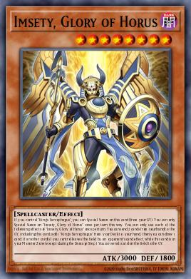
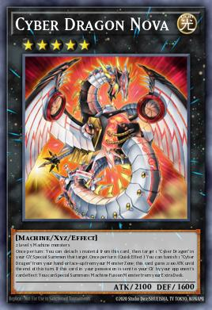

Crystron
Guía del deck. Las jugadas conservan sus condiciones y límites documentados.
APARTADO_01 — Identidad y propósito de esta construcción
Dictamen: híbrido de control reactivo por Sincronía Máquina (Cristron) y presencia autónoma de Nivel 8 / Xyz (Horus); las distintas cartas de interacción/respuestas no convierten por sí solas todas las manos en un tablero. Objetivo 1: sobrevivir e interrumpir desde Tristaros/Citree, obtener ventaja con Elesqueletus y convertir recursos en presión; objetivo 2: desarrollar Amset + Hapi a Número 90 para negar efecto de monstruo o a Vampiro Zombi para moler y extender; objetivo 3: llegar a Nova → Infinito con dos Nivel 5 Máquina (C06) para negar la activación de cartas/efectos; objetivo 4: ganar tempo con Gotas Prohibidas / Súper Polimerización antes de aplicar bloqueos del Extra. Son objetivos tácticos, no victorias garantizadas.
Conflictos estructurales reales: (a) Smiger/Thystvern en campo restringen el resto del turno a Sincronías Máquina si usan su efecto de destruir; (b) Sulfador al invocarse por su efecto propio restringe a Máquinas del Extra por el resto del turno; (c) tras cualquiera de esas restricciones, S:P, Número 90, Vampiro Zombi, Garura y Fangodragón pueden quedar inaccesibles ese turno según el caso; (d) la segunda habilidad de Hagoita exige un Cantante «Velociroid» que esta lista no lleva. No declarar «puedo sacar cualquier Extra».
Fortalezas: dos motores que pueden trabajar en turnos distintos, recuperación de Cristron mediante Inclusión/Elesqueletus, descarte Horus que alimenta Cementerio, acceso alternativo a Infinito sin Normal (C06), sinergia Amset→Smiger de Cementerio (C07), salidas Máquina mediante las restricciones y cartas disruptivas genéricas. Debilidades: dependencia de Normal para algunos starters, escasez de Cantantes frente a 15 Extra, gastar Smiger en Campo impide usar su búsqueda de Cementerio ese mismo turno, C06 consume otra copia de Azufafnir del Deck y el Side puede bloquear nuestras propias búsquedas o destierros.
APARTADO_02 — Identidad del inventario y planes
1. Primero (línea Cristron): priorizar la pieza que deja Tristaros o Citree operativa en turno rival; reservar la interrupción para el punto adecuado. C01/C02/C03 dependen del starter y las piezas disponibles.
2. Primero (línea Horus): con Amset + Hapi o Sarcófago + Amset, construir un Xyz de Rango 8 antes de activar efectos que cierren el Extra; C04/C05. Con Amset + Smiger, considerar la salida híbrida C07: un Horus 8 y Tristaros listo, sin bloquear el Extra en el turno propio.
3. Segundo: determinar primero si hay material compatible para Súper Polimerización, negar con Gotas o impedir una búsqueda; después desarrollar Smiger/Sulfador. No activar una restricción de Sincronía antes de decidir una Fusión, Link o Xyz no Máquina.
4. Turno rival: Tristaros responde a activación de carta/efecto y hace Sincronía Máquina con el monstruo que trae; Citree usa únicamente ella y un no Cantante revivido del Cementerio en Main/Battle rival.
5. Recuperación: Inclusión en Cementerio revive un Cristron, Elesqueletus recupera uno del Cementerio/destierro tras su Sincronía, Thystvern se destierra desde el Cementerio para buscar un monstruo Cristron del Deck; Sarcófago habilita Horus del Cementerio. No contabilizar recursos usados/desterrados como disponibles en mano. Azufafnir destruido desde Campo puede sustituirse por otra pieza del Deck (C06/V03), pero requiere que esa copia siga allí.
A02.1 — Cómo conservar recursos de turno en turno
| Momento | Prioridad del jugador | Recurso que no debes dar por supuesto |
| Turno 1, mano corta | Si solo hay Smiger/Tristaros, preparar Citree o Tristaros reactivo antes de gastar herramientas para un tablero irreal | Que Hagoita/Elesqueletus ya está en Campo al pasar turno; sin respuesta rival aún no está |
| Turno 1, mano de tres piezas | Comparar C02 con C06: recuperación + futuro Quarion frente a Infinito con negación inmediata | Que Nova/Infinito sea legal después del efecto de Campo de Smiger: no lo es ese turno |
| Tras un efecto negado | Revisar cartas que realmente permanecen en Campo, GY y Deck; elegir Horus o segunda ruta del motor | Smiger destruido/buscado, Inclusión recuperada o robo opcional que jamás se resolvió |
| Turno rival | Guardar Citree para Main/Battle, Tristaros para activación; Agrupamiento solo si se colocó en turno anterior | Una cadena de negación que Tristaros o Elesqueletus no posee |
| Turno 3+ | Con Sarcófago sobreviviente, reutilizar Amset/Hapi que estén en GY; con Elesqueletus, recuperar Inclusión/Smiger del lugar real | Horus convertido en material Xyz no está en GY; primero debe desacoplarse o ir el Xyz al GY |
| Segundo contra campo amplio | Evaluar Gotas/Súper Polimerización antes de bloquear el Extra y conservar un starter Cristron viable | Que un par cualquiera de monstruos cumple Garura/Fangodragón o que la carta responda a todo |
A02.2 — Frecuencia matemática de ver los starters, NO de ganar
Supuesto reproducible: 40 cartas Main y mano inicial de 5 cartas tomadas al azar sin reemplazo, sin mulligan, búsquedas, robos ni efectos rivales. Cada fila mide solamente la probabilidad combinatoria de tener al menos una copia de cada nombre solicitado; NO mide que el combo pueda resolverse (puede haberse robado su único objetivo del Deck, faltar otra copia en Deck, ser negado o no existir la ventana rival). Fórmula para dos grupos: 1 − C(40−a,5)/C(40,5) − C(40−b,5)/C(40,5) + C(40−a−b,5)/C(40,5); para tres grupos, inclusión-exclusión análoga. C(n,k) es combinación.
| Apertura por nombres confirmados | Copias en Main | Frecuencia teórica de la coincidencia |
| Al menos Smiger para C01 | 3 | 33,76 % |
| Inclusión + Sulfador para C02 | 3 + 2 | 6,81 % |
| Inclusión + Sulfador + Azufafnir para C06 | 3 + 2 + 3 | 1,58 % |
| Amset + Smiger para C07 | 3 + 3 | 9,80 % |
| Amset + Hapi para C04 | 3 + 1 | 3,55 % |
| Azufafnir + Smiger para V03 | 3 + 3 | 9,80 % |
Lectura para jugar: C06 produce la negación más general de estas aperturas, pero su combinación exacta de tres nombres es poco frecuente en cinco cartas; conviene practicar C01/C07/V03 también. No sumar los porcentajes: las manos se superponen. La probabilidad real de completar una ruta debe descontar objetivos fuera del Deck y estudiar interrupciones, sin extrapolar estas cifras a victoria/competitividad.
Formato: TCG supuesto y pendiente de confirmar; deck_id real pendiente. Decisión del usuario pendiente: aprobar inventario transcrito y formato. Las fichas no modifican cantidades.
APARTADO_03 y APARTADO_04 — Inventario y fuentes
La matriz A06 de abajo conserva cada carta y copia del inventario comunicado, con una sola fila por identidad y dos columnas de zona si una misma carta aparece en Main y Side.
A03: nombres/cantidades de Miguel inalterados: 40 Main (27 monstruos, 12 mágicas, 1 trampa), 15 Extra y 15 Side; ningún Side cuenta en mano inicial. El Cotejo A03 es numérico, no una certificación de legalidad del formato.
A04: las 39 filas siguientes contienen ahora CID y enlace a la ficha individual Konami oficial. «Cristron» es el nombre español de Crystron; «Caballero Mecánico» es Clockwork Knight Link-1. Se copiaron 20 fotos reales existentes del maestro a imagenes/<CID>.jpg; 19 fotos faltan y quedan como FOTO_PENDIENTE. El CID documental no es el ID real del deck. No se usaron imágenes fabricadas. El texto Konami es la fuente de identidad/regla, no una prueba de simulación.
Fotos locales útiles para esta iteración: [Amset](imagenes/19153.jpg), [Hapi](imagenes/19155.jpg), [Sarcófago](imagenes/19200.jpg), [Flor de Ceniza](imagenes/12950.jpg), [Droll](imagenes/9279.jpg), [Fuwalos](imagenes/20500.jpg), [Purulia](imagenes/20206.jpg), [Gotas](imagenes/15299.jpg), [Súper Polimerización](imagenes/7445.jpg); Número 90 — FOTO_PENDIENTE en fuente oficial. Los enlaces locales anteriores corresponden a imágenes efectivamente presentes.
APARTADO_05 y APARTADO_06 — Matriz ÚNICA por identidad, función y sinergia
<a id="APARTADO_06"></a>
APARTADO_06 — Matriz canónica de trazabilidad. IDs CRYH-### son locales documentales; la columna CID identifica la ficha oficial Konami. Rol preliminar significa texto/finalidad estudiados, pero no resultado de simulación. Cada relación Rxx se explica inmediatamente después de esta matriz. Cxx y Vxx enlazan a las secuencias A09; cuando no existe una secuencia propia, la carta puede seguir siendo funcional (staple, interrupción o Side). Se conserva una sola matriz, sin archivos paralelos por carta.
| ID local | Carta del inventario original | Main | Extra | Side | Reserva | CID oficial | Función, condición y enlace causal (A05/A06/A08/A09) | Evidencia |
| CRYH-001 | Cristron Sulfador | 2 | 0 | 0 | 0 | 20759 | Nivel 5 no Cantante; destruye una carta Cristron propia para invocarse desde mano/GY y después manda hasta 2 Cristron distintos del Deck al GY; bloqueo a Máquinas Extra. R04/R07/R19; C02/C06/C07/V01. | Texto oficial; foto pendiente; combo lógico |
| CRYH-002 | Cristron Smiger | 3 | 0 | 0 | 0 | 12608 | Nivel 3 no Cantante; destruye boca arriba propia y trae Cantante del Deck; bloqueo a Sincronías Máquina. GY destierro busca M/T Cristron, pero solo 1 de sus efectos por turno. R02/R03; C01/C02/C06 como coste/C07 como GY/V03. | Texto oficial; foto pendiente; combo lógico |
| CRYH-003 | Cristron Tristaros | 2 | 0 | 0 | 0 | 20758 | Nivel 2 Cantante; al responder a activación rival trae Cristron del Deck y hace Sincronía Máquina incluyéndolo; GY destierro destruye Sincronía propia para traer 2 Cristron del Deck; bloqueo a Máquinas. R07/R08; C03/V01. | Texto oficial; foto pendiente; combo lógico |
| CRYH-004 | Cristron Azufafnir | 3 | 0 | 0 | 0 | 12756 | Nivel 5 no Cantante; descarta otro Cristron para invocarse en DEF, después destruye carta propia; si se destruye en Campo puede traer Cristron del Deck en DEF. R12/R19; C06 con segundo Azufafnir en Deck, V01/V03. | Texto oficial; foto pendiente; combo lógico condicional |
| CRYH-005 | Cristron Citree | 1 | 0 | 0 | 0 | 12606 | Nivel 2 Cantante; en Main/Battle rival revive un no Cantante del GY con efecto negado y hace Sincronía Máquina solo con esos dos, desterrándolos. R06; C01/C02/V01. | Texto oficial; foto pendiente; combo lógico |
| CRYH-006 | Cristron Thystvern | 1 | 0 | 0 | 0 | 12609 | Nivel 3 no Cantante; como Smiger desde Campo pero en GY destierra para buscar monstruo Cristron; solo uno de sus dos efectos por turno. R11; C02. | Texto oficial; foto pendiente; función comprobada |
| CRYH-007 | Amset, Gloria de Horus | 3 | 0 | 0 | 0 | 19153 | Nivel 8; manda de mano 2 cartas incluyéndose para buscar Sarcófago y opcionalmente robar 1; desde GY se invoca si controlas Sarcófago. R13/R14/R15; C04/C05/C07 (descarta Smiger). | Oficial; foto local; combo lógico |
| CRYH-008 | Hapi, Guía de Horus | 1 | 0 | 0 | 0 | 19155 | Nivel 8; reaparece de GY con Sarcófago; si carta propia deja Campo por efecto rival puede recuperar 2 cartas de GY/destierro, condicional. R14/R15; C04/C05. | Oficial; foto local; combo lógico |
| CRYH-009 | Flor de Ceniza & Primavera Feliz | 3 | 0 | 0 | 0 | 12950 | Handtrap; impide un efecto que añada del Deck, invoque del Deck o mande del Deck al GY; proteger puntos críticos, no es extender Crystron. D09. | Oficial; foto local; utilidad autónoma |
| CRYH-010 | El Bufón y el Pájaro del Candado | 3 | 0 | 0 | 0 | 9279 | Handtrap tras una adición del Deck a mano; bloquea nuevas adiciones ese turno, también propias si se resuelve. D10. | Oficial; foto local; conflicto identificado |
| CRYH-011 | Fuwalos Multivadora | 3 | 0 | 0 | 0 | 20500 | Handtrap de robo condicionada por especiales del adversario desde Deck/Extra; sus requisitos de campo/turno se comprueban antes de usar. D09. | Oficial; foto local; autonomía |
| CRYH-012 | Purulia Multivadora | 2 | 0 | 1 | 0 | 20206 | Handtrap para determinadas invocaciones del adversario desde mano; 2 Main + 1 Side sin duplicar el total. D09/S03. | Oficial; foto local; Side condicionado |
| CRYH-013 | Inclusión Cristron | 3 | 0 | 0 | 0 | 20798 | Mágica Continua: al activarla busca otra carta Cristron, protege primera destrucción por batalla de cada Cristron; desde GY se destierra para revivir Cristron. R01/R04/R05; C02/C06/C07/V04. | Oficial; foto pendiente; combo lógico |
| CRYH-014 | Sarcófago del Rey | 2 | 0 | 0 | 0 | 19200 | Mágica Continua; envía carta de mano al GY para mandar un Horus del Deck al GY hasta 4 usos/turno, protege y habilita revivir Amset/Hapi. R14; C04/C05. | Oficial; foto local; combo lógico |
| CRYH-015 | Súper Polimerización | 3 | 0 | 0 | 0 | 7445 | Rompecampos de Fusión usando materiales válidos de cualquier Campo; descartar 1 carta, oponente no responde a activación; usar antes de bloqueo a Sincronías/Máquinas. R17/R18; A08-I03. | Oficial; foto local; materiales condicionales |
| CRYH-016 | Gotas Prohibidas | 3 | 0 | 0 | 0 | 15299 | Negación/mitad de ATK de monstruos de efecto rivales mediante envío de otras cartas de mano/Campo; coste/ratio y tipos enviados importan. D08. | Oficial; foto local; autonomía |
| CRYH-017 | Entierro Insensato | 1 | 0 | 0 | 0 | 5236 | Envía monstruo del Deck al GY; habilita Thystvern/Tristaros de Cementerio o Amset/Hapi si ya hay Sarcófago. D04. | Oficial; foto pendiente; utilidad causal |
| CRYH-018 | Agrupamiento Cristron | 1 | 0 | 0 | 0 | 20817 | Trampa Continua: protege Cristron de destierro por efectos rivales; recicla Cristron de GY/destierro al Deck para destruir 1–2 cartas boca arriba seleccionadas. R21; D06. | Oficial; foto pendiente; trampa requiere turno legal |
| CRYH-019 | F.A. Coche Trucado del Amanecer | 0 | 2 | 0 | 0 | 13710 | Nivel 7 Máquina Sincronía (1 Cantante+1 no Cantante), niega M/T bajando 2 Niveles; potencial Citree2+Sulfador5. Ficha oficial consultada señalaba «Prohibida»; alerta puntual, sin auditoría global de lista. | Oficial; foto local; acceso lógico condicionado |
| CRYH-020 | Cristron Elesqueletus | 0 | 2 | 0 | 0 | 20778 | Nivel 7 Máquina Sincronía, recupera Cristron GY/destierro al sincronizar; destruido después de ser sincronizado revive Cristron. R09/R10; C02/C03. | Oficial; foto pendiente; combo lógico |
| CRYH-021 | Cristron Quariongandrax | 0 | 1 | 0 | 0 | 12781 | Nivel 9 Máquina Sincronía, 2+ Cantantes + exactamente 1 no Cantante; al sincronizar destierra hasta número de materiales de monstruos rivales Campo/GY. R07/V01. | Oficial; foto pendiente; variante condicionada |
| CRYH-022 | S:P Pequeña Caballera | 0 | 1 | 0 | 0 | 19188 | Link-2 de 2 Efectos; uso táctico de destierro, pero no se puede invocar tras bloqueo Smiger/Sulfador durante ese turno. D03. | Oficial; foto local; solo acceso potencial previo |
| CRYH-023 | Caballero Mecánico | 0 | 1 | 0 | 0 | 20787 | Link-1 Clockwork Knight, Máquina no Link ATK original ≤1000; buscaría «Noche Mecánica» que NO figura en lista; puede tributar Máquina para revivir otra Máquina pequeña del GY. R20. | Oficial; foto local; no asumir búsqueda |
| CRYH-024 | Ciber Dragón del Infinito | 0 | 1 | 0 | 0 | 11765 | Rango 6 Máquina Xyz; se superpone sobre Nova, absorbe monstruo en Ataque y niega carta/efecto desacoplando. R19/C06; bloqueado por Smiger de Campo, permitido por bloqueo Máquina de Sulfador. | Oficial; foto local; ruta C06 |
| CRYH-025 | Ciber Dragón Nova | 0 | 1 | 0 | 0 | 10870 | Rango 5 Máquina Xyz: 2 Máquinas de Nivel 5, Sulfador y segunda copia de Azufafnir en C06; plataforma de Infinito. R19/C06; no hay «Ciber Dragón» en Main para revivir. | Oficial; foto local; ruta C06 |
| CRYH-026 | Hagoita de Alta-Velociroid | 0 | 1 | 0 | 0 | 12157 | Nivel 5 Máquina Sincronía; Citree2+Smiger3; efecto rápido se sacrifica y aumenta 1 Nivel de monstruos en Campo; su auto-revivir exige Cantante Velociroid inexistente en Main. R06; C01. | Oficial; foto pendiente; combo lógico |
| CRYH-027 | Número 90: Señor Fotónico de Ojos Galácticos | 0 | 1 | 0 | 0 | 13826 | Rango 8, 2 Nivel 8 Horus; niega efecto de monstruo desacoplando, pero con Horus como material no lo destruye por no ser Galaxia/Galáctico; sin Fotónico de material no obtiene inmunidad. R15; C04. | Oficial; foto pendiente; combo lógico |
| CRYH-028 | El Vampiro Zombi | 0 | 1 | 0 | 0 | 16850 | Rango 8 Zombi Xyz, 2 Nivel 8; desacopla para mandar 4 cartas de cada Deck al GY y si cae algún monstruo puede revivir uno de los enviados; incertidumbre del resultado. R16; C05. | Oficial; foto local; combo lógico |
| CRYH-029 | Destructor Samurái | 0 | 1 | 0 | 0 | 13360 | Nivel 7 Máquina Sincronía, opción de batalla tras Citree2+Sulfador5; no confundir control de batalla con negación general. D05. | Oficial; foto pendiente; acceso lógico |
| CRYH-030 | Garura, Alas de Vida Resonante | 0 | 1 | 0 | 0 | 17746 | Fusión exige 2 monstruos de mismo Tipo/Atributo y distintos nombres; objetivo posible Súper Polimerización sin bloqueo previo; al ir GY puede robar. R17; A08-I03. | Oficial; foto local; material rival condicionado |
| CRYH-031 | Fangodragón del Pantano | 0 | 1 | 0 | 0 | 13454 | Fusión exige 2 monstruos mismo Atributo y distinto Tipo; opción Super Poly si rival aporta materiales; imposible tras bloqueo a Sincronías/Máquinas. R18; A08-I03. | Oficial; foto local; material rival condicionado |
| CRYH-032 | Cazadora del Caos | 0 | 0 | 2 | 0 | 9454 | Side: puede invocarse desde mano ante especial del rival descartando carta; impide al adversario desterrar; usar solo tras entrada Side. S01. | Oficial; foto pendiente; condicional |
| CRYH-033 | Artefacto Lancea | 0 | 0 | 2 | 0 | 11243 | Side: tributar desde mano/Campo en turno rival; ningún jugador destierra ese turno; puede bloquear nuestros efectos de Smiger/Tristaros/Citree. S01. | Oficial; foto pendiente; conflicto |
| CRYH-034 | Regaño Solemne | 0 | 0 | 1 | 0 | 11411 | Side: contra trampa de negación fuerte, exige ninguna otra carta Colocada por ti y pago de LP; problema si quieres Colocar Agrupamiento/Juicio. S04. | Oficial; foto pendiente; conflicto |
| CRYH-035 | Llamado por la Tumba | 0 | 0 | 1 | 0 | 13619 | Side: destierra monstruo en GY rival y niega su nombre hasta el final del próximo turno; proteger starter ante Ash en contexto legal. S02. | Oficial; foto local; condicional |
| CRYH-036 | Talento de Tácticas Triples | 0 | 0 | 1 | 0 | 15296 | Side: únicamente en Main Phase si rival activó efecto de monstruo en tu Main Phase ese turno; robo, control o mirar mano según condición. S02. | Oficial; foto local; condicional |
| CRYH-037 | Prohibida la Venta | 0 | 0 | 2 | 0 | 16868 | Side: declara nombre; rival no activa ese nombre por el turno; tú no podrás activarlo el resto del duelo. S03. | Oficial; foto pendiente; riesgo largo plazo |
| CRYH-038 | Arresto Erróneo | 0 | 0 | 2 | 0 | 11849 | Side: impide a ambos añadir Deck→mano salvo robando hasta final de tu próximo turno; niega tus búsquedas Inclusión, Imsety, Thystvern, Smiger. S03. | Oficial; foto pendiente; conflicto fuerte |
| CRYH-039 | Juicio Solemne | 0 | 0 | 3 | 0 | 4861 | Side: contratrampa pagar mitad LP para negar invocación o activación M/T; no niega libremente todo efecto de monstruo. S04. | Oficial; foto local; primer turno defensivo |
Cotejo de cantidades: Main 40 / Extra 15 / Side 15 / Reserva 0 = 70 copias en 39 identidades de este deck. La identidad CRYH-012 tiene 2 Main + 1 Side; no sumar esa copia Side a la mano inicial ni inventar una cuarta.
A06.0 — Cómo cooperan las cartas en 30 segundos
1. Dictamen: Cristron prepara materiales y Sincronías en turno rival; Horus convierte Cementerio en Nivel 8 para Xyz. Además, la destrucción de Azufafnir permite usar Máquinas Nivel 5 para Nova/Infinito. Son salidas alternativas, no una cadena automática única.
2. Motor: Smiger/Tristaros, Inclusión y Sulfador transforman destruir/enviar/recuperar en Citree, Elesqueletus y Quariongandrax.
3. Puentes: Sarcófago e Imsety dan recursos Horus y descartan cartas, lo que puede cargar el Cementerio Cristron; no les quitan sus restricciones.
4. Sinergia indirecta: Entierro Insensato puede enviar Thystvern o Tristaros para sus efectos de GY; Súper Polimerización puede usar monstruos del adversario con atributos/tipos compatibles.
5. Conflicto decisivo: tras Smiger/Thystvern (efecto Campo) no salen Xyz/Link/Fusiones ese turno; tras Sulfador (efecto propio) solo salen Máquinas.
6. Decisión concreta: si la mano permite un Rango 8, hacerlo antes del bloqueo Cristron; si interesa Súper Polimerización, resolverla antes de restringirse el Extra.
7. Qué aprender: C01/C03/V03 para turno rival, C02/V01 para secuencia Cristron, C04/C05 para Horus, C06 para Infinito y C07 como puente entre motores; revisar el material exacto y el estado de la cadena en cada paso.
Motores y 21 relaciones causales (no confundir relaciones con combos)
| Relación | Cartas por ID | Causa → resultado | Condición y evidencia |
| R01 | 013→002/001/003 | Inclusión activada BUSCA otra carta Cristron del Deck | 1 activación de Inclusión/turno; oficial |
| R02 | 002→005 | Smiger DESTRUYE carta propia boca arriba y INVOCA Cantante Cristron del Deck | Smiger elige ese efecto, bloquea Extra a Sincronías Máquina; oficial/C01/C02 |
| R03 | 002→013/018 | Smiger desde GY SE DESTIERRA Y BUSCA M/T Cristron | No puede usar este y su efecto de Campo el mismo turno; oficial |
| R04 | 001+013→003/006 | Sulfador destruye Inclusión propia y se invoca, luego ENVÍA hasta 2 nombres Cristron del Deck al GY | Requiere Inclusión boca arriba y Sulfador en mano/GY; solo Máquinas Extra; oficial/C02 |
| R05 | 013→002/005/001 | Inclusión en GY se destierra para REVIVIR un Cristron en GY | Efecto propio una vez/turno; revive Smiger en C02; oficial |
| R06 | 005+002→026 | Citree REVIVE Smiger no Cantante y hace Sincronía Máquina Nivel 5 | Solo Main/Battle rival, materiales desterrados; oficial/C01 |
| R07 | 003+001→020 | Tristaros responde a activación rival, TRAE Sulfador y hace Sincronía Máquina Nivel 7 | Debe incluir recién invocado Sulfador; oficial/C03 |
| R08 | 003+020→003/004 | Tristaros del GY se destierra, destruye Sincronía propia y TRAE 2 Cristron del Deck | Sincronía existente, espacio en Campo y objetivos en Deck; oficial/V01 |
| R09 | 020→005 | Elesqueletus previamente sincronizado y destruido REVIVE 1 Cristron de GY/destierro | Destrucción por batalla/efecto; oficial/V01 |
| R10 | 020→013 | Elesqueletus al ser sincronizado RECUPERA 1 carta Cristron de GY/destierro | Recupera Inclusión desterrada en C02; no autoriza reactivarla el mismo turno; oficial |
| R11 | 006→001/003 | Thystvern en GY se destierra para BUSCAR otro monstruo Cristron | Exclusión de su propio nombre y solo 1 de sus dos efectos/turno; oficial |
| R12 | 004→001/003/005/004 | Azufafnir se invoca descartando Cristron y destruye carta propia; si él es destruido en Campo TRAE Cristron de Deck, incluso otra copia de Azufafnir si está disponible | Coste real, autodestrucción y segundo disparador en C06/V03; no confundir con extender gratis |
| R13 | 007+008→014 | Amset envía de mano él mismo y Hapi, BUSCA Sarcófago y opcionalmente roba | Dos cartas en mano; oficial/C04 |
| R14 | 014→007/008 | Sarcófago manda Horus del Deck a GY y HABILITA invocar Amset/Hapi del GY | Enviar otra carta de mano como coste; hasta 4 usos/turno del envío; oficial/C05 |
| R15 | 007+008→027 | Dos Horus Nivel 8 SON MATERIALES de Número 90 | No gana beneficios propios de material Fotónico/Galaxia; oficial/C04 |
| R16 | 007+008→028 | Dos Horus Nivel 8 SON MATERIALES de Vampiro Zombi | Muele 4 por jugador solo si se paga desacoplamiento; resultado aleatorio; oficial/C05 |
| R17 | 015→030 | Súper Polimerización usa 2 monstruos de igual Tipo/Atributo y distinto nombre para Garura | Material exacto en campo de uno/ambos jugadores; no después de bloqueos; oficial; interacción, no combo |
| R18 | 015→031 | Súper Polimerización usa 2 monstruos de mismo Atributo y distinto Tipo para Fangodragón | Material rival o propio compatible; no después de bloqueos; oficial; interacción |
| R19 | 013+001+004+002→025→024 | Inclusión BUSCA Smiger para descarte; Sulfador5 se conserva; Azufafnir descarta Smiger, se destruye y TRAE segunda copia Nivel5; ambos HACEN Nova, luego Infinito | C06 con mano inicial y 2 copias de Azufafnir demostradas, sigue documental/condicional; bloqueo «solo Máquina» sí permite Xyz Máquina, «solo Sincronía Máquina» de Smiger no |
| R20 | 005/003/002→023 | Máquina no Link ATK original ≤1000 puede HACER Caballero Mecánico; luego puede revivir una Máquina pequeña a coste de sacrificar otra | Acceso Link antes de bloqueos; «Noche Mecánica» ausente del Main, no adjudicar búsqueda; oficial |
| R21 | 018+020→carta rival | Agrupamiento RECICLA carta Cristron de GY/destierro al Deck y DESTRUYE 1 boca arriba o 2 con Sincronía Cristron propia | Requiere objetivo(s) boca arriba, recurso Cristron y Trampa legalmente activa; oficial |
Mapa causal para enseñar: Inclusión → BUSCA Smiger → DESTRUYE Smiger → INVOCA Citree (R01/R02); Inclusión destruida → REVIVE Smiger (R04/R05); Citree + Sulfador → SINCRONIZA Elesqueletus → RECUPERA Inclusión (R10); Imsety + Hapi → BUSCA Sarcófago → REVIVE ambos → Xyz Número 90 / Vampiro Zombi (R13–R16). Las cartas sin foto quedan como [FOTO_PENDIENTE] en estos nodos.
Cartas sin ruta A09 propia: las 11 herramientas Main/Side de respuesta y los monstruos de Extra meramente condicionales se conservan como AUTÓNOMA_ÚTIL, ACCESO_POTENCIAL o DEPENDIENTE_DE_MATCHUP, nunca CERO_SINERGIA por falta de una cadena. Los 21 enlaces anteriores no equivalen a 21 combos ni 21 victorias.
A06.2 — Los 13 accesos del Extra de esta lista (sin añadir cartas)
| Extra | Acceso o uso concreto | Diagnóstico |
| F.A. Coche Trucado del Amanecer ×2 | Citree 2 + Sulfador/Azufafnir 5 = Sincronía Máquina 7; negación M/T al bajar 2 niveles | Material posible, alerta puntual de prohibición TCG vista en ficha oficial; no validado en torneo |
| Elesqueletus ×2 | Citree 2 + Sulfador 5, o Tristaros 2 + Sulfador 5 | Ruta C02/C03; recuperar y revivir según disparadores |
| Quariongandrax ×1 | Tristaros 2 + Citree 2 + Sulfador/Azufafnir 5 = 9; requiere 2 Cantantes + 1 no Cantante | Variante V01 en turno rival; destierro al finalizar cadena |
| S:P Pequeña Caballera ×1 | 2 monstruos de Efecto, antes de bloqueos; revisar uso de material de Extra para efecto de invocación | Potencial; no tiene apertura completa en C01–C07 |
| Caballero Mecánico ×1 | 1 Máquina no Link ATK original ≤1000, p. ej. Tristaros/Citree/Smiger | Acceso aislado, sin búsqueda «Noche Mecánica» (no está incluida) |
| Ciber Dragón del Infinito ×1 | Superponer sobre Nova que controles | C06 detallado: Nova + 2 materiales heredados, Infinito con 3; no tras bloqueo Smiger |
| Ciber Dragón Nova ×1 | 2 Máquinas Nivel 5 simultáneas: Sulfador/Azufafnir | C06 detallado con segunda copia Azufafnir del Deck y Sulfador en Campo; R19 |
| Hagoita de Alta-Velociroid ×1 | Citree 2 + Smiger 3 en turno rival | C01; resurrección propia no disponible sin Cantante Velociroid |
| Número 90 ×1 | Amset 8 + Hapi 8 desde GY con Sarcófago | C04; niega pero no destruye por desprender Horus |
| El Vampiro Zombi ×1 | Amset 8 + Hapi 8 | C05; 8 cartas combinadas enviadas de ambos Decks, monstruo revivido solo si cae |
| Destructor Samurái ×1 | Citree 2 + Sulfador 5 como alternativa de Elesqueletus | V04: ruta condicional de combate; pierde recuperación de Inclusión |
| Garura ×1 | Súper Polimerización + 2 materiales de igual Tipo/Atributo y distinto nombre | Condicional a Campo/matchup; Fusión prohibida tras bloqueos mencionados |
| Fangodragón del Pantano ×1 | Súper Polimerización + 2 monstruos mismo Atributo y distinto Tipo | Condicional al Campo; no prometer materiales rivales |
Cobertura A06: 39/39 identidades clasificadas; 21 relaciones de alcance explícito, no todas cerradas como secuencia. 13/13 Extra evaluadas por requisitos; 8 identidades tienen acceso trazado en C01–C07/V01–V04 (Hagoita, Elesqueletus, Quariongandrax, Número 90, Vampiro Zombi, Nova, Infinito y Destructor Samurái). Las demás conservan acceso potencial, dependiente de rival o condicionado al formato. No hay dictamen COMPLETA ni acreditación de simulador.
APARTADO_08 — Estrategia, selección de jugadas y Side
20 decisiones situacionales D01–D20
| Decisión | Situación inicial → qué hacer y por qué | Evitar |
| D01 | Solo Smiger y vamos primero: Normal Smiger → destruirse → Citree; reservar Citree para sincronizar con Smiger del GY en turno rival (C01). | Gastar Smiger GY para buscar inmediatamente: ese turno ya usó su otro efecto. |
| D02 | Inclusión + Sulfador primero: buscar Smiger y aprovechar que Sulfador destruye la Inclusión para usar su efecto de GY (C02). | Mandar inclusiones a GY sin una carta Cristron válida que revivir. |
| D03 | Necesito S:P, Clockwork Knight, Fusión o Xyz no Máquina: resolver esas invocaciones antes de activar Smiger/Thystvern de Campo o Sulfador. | Asumir que un bloqueo solo obliga a usar Máquinas cuando Smiger exige Sincronía Máquina. |
| D04 | Entierro Insensato con starter y sin GY: elegir Thystvern para buscar monstruo, Tristaros si ya hay Sincronía propia por destruir, o Horus con Sarcófago presente. | Enviar a GY monstruo sin efecto útil disponible todavía. |
| D05 | Citree + Nivel 5 no Cantante en GY rival Main/Battle: elegir Elesqueletus para recuperar, o Samurái/F.A. para utilidad situacional y condición legal de formato. | Decir que Citree usa más de 2 materiales o ignorar el destierro. |
| D06 | Agrupamiento Colocado turno anterior: si hay Cristron GY/destierro y objetivo boca arriba, reciclar para destruir; si hay Sincronía Cristron, comprobar opción de 2 objetivos. | Destruir boca abajo con este efecto que pide cartas boca arriba. |
| D07 | Amset + Hapi/Sarcófago primero: seleccionar N.º 90 para negación de monstruo o Vampiro Zombi para molinos/extendidos aleatorios (C04/C05). | Querer convocar a la vez ambos Xyz usando los mismos dos Horus. |
| D08 | Segundo con monstruos rivales de efecto: Gotas Prohibidas antes de intentar una línea expuesta; calcular exactamente cartas enviadas y objetivos. | Suponer que una sola Gotas niega cualquier cantidad de monstruos sin coste. |
| D09 | Oponente añade/invoca del Deck o mano: elegir Ash/Droll/Fuwalos/Purulia por texto y ventana, conservando roles autónomos. | Activar Droll antes de producirse la primera adición o Fuwalos sin cumplir su requisito. |
| D10 | Droll o Arresto Erróneo ya resolvieron: cambiar a efectos que invocan desde GY/Deck o remueven; Inclusión/Imsety no pueden añadir del Deck a mano bajo restricción. | Continuar un paso de búsqueda fallido como si la carta hubiese llegado a mano. |
| D11 | C02 ha llegado a Elesqueletus y Tristaros está en GY: evaluar si convertirlo en 2 Cristron + revivir Citree para preparar Quarion V01, o conservar Eles + Smiger. | Destruir tu única Sincronía sin suficientes objetivos y espacio. |
| D12 | Rival usa destierro: Side S01 con Cazadora del Caos o Lancea según turno; Lancea te impide desterrar también, así que ajustar plan Cristron. | Afirmar que Lancea solo perjudica al oponente. |
| D13 | Rival cierra búsquedas: conservar cartas ya en Campo/GY, usar Sarcófago para enviar monstruos, no inflar recursos inexistentes. | Contar una búsqueda como resultado cuando fue negada. |
| D14 | Rival posee 2 materiales para Garura/Fangodragón: usar Súper Polimerización antes de restringir el Extra y elegir la Fusión cuyo requisito coincide. | Inventar que cualquier par de monstruos fusiona o que Super Poly equivale a combo completo. |
| D15 | Tengo Inclusión + Sulfador + Azufafnir y segundo Azufafnir todavía en Deck: ejecutar C06 → Nova → Infinito si se necesita negar activación de cualquier tipo. | Usar Smiger desde Campo antes de los Xyz. El Smiger de C06 es buscado para ser descartado, no invocado. |
| D16 | Tengo Amset + Smiger: enviar ambos a GY por Amset, revivir Amset con Sarcófago, buscar Inclusión con Smiger desterrado y traer Tristaros con la búsqueda de Inclusión (C07). | Tratar «Smiger descartado» como Smiger que ya usó su efecto de Campo; no son lo mismo. |
| D17 | Tengo Azufafnir + Smiger, sin Normal adicional que invertir: la variante V03 prepara Tristaros + Agrupamiento colocado. | Intentar activar Agrupamiento en el mismo turno en que se colocó; destruir también a Tristaros por error al resolver Azufafnir. |
| D18 | C02 va segundo y el oponente tiene un monstruo de efecto difícil de combatir: elegir V04/Destructor Samurái en lugar de Elesqueletus si el combate es la prioridad. | Contar Inclusión en mano: sin Elesqueletus, quedó desterrada. |
| D19 | Comparo final de turno: C02 ofrece Elesqueletus + Smiger y recuperación; C06 ofrece Infinito con negación; C07 ofrece Horus 8 + Tristaros y dos Continuas. Elegir un objetivo según mano real, sin sumarlos. | Afirmar que C02 y C06 se hacen juntos con las mismas copias/zonas o que Nova sigue legal tras Smiger. |
| D20 | Tengo dos Horus en mesa y necesito seguir jugando Cristron: hacer Número90/Vampiro antes de activar Smiger Campo; reservar Normal o un buscador Cristron para la siguiente decisión. | Gastar los dos Horus en Xyz y seguir contándolos como Nivel 8 libres para otra Xyz. |
A08.1 — Árbol breve de selección de apertura por objetivo, no por popularidad
| ¿Qué cartas tengo realmente? | ¿Qué necesito conseguir? | Ruta preferente | ¿Qué sacrifico? |
| Inclusión + Sulfador + Azufafnir | Negar una activación con un monstruo ya preparado en mi turno | C06 → Infinito | Tres piezas de mano y segunda copia Azufafnir del Deck; no hago la línea de Smiger Campo |
| Inclusión + Sulfador | Recuperar mano y preparar continuación | C02 → Elesqueletus, opcional V01 | Restringe Extra a Sincronías Máquina; no tiene negación genérica inmediata |
| Amset + Smiger | Usar ambos motores sin romper el Extra | C07 → Amset + Tristaros, luego Elesqueletus | Dos búsquedas vulnerables a Droll y activación rival necesaria |
| Amset + Hapi | Negar efecto de monstruo | C04 → Número 90 | Los Horus pasan a ser materiales Xyz; la negación con Horus no destruye |
| Sarcófago + Amset, Hapi aún en Deck | Ganar recursos de GY con molino | C05 → Vampiro Zombi | Resultado de ocho cartas enviadas es variable; no produce negación automática |
| Solo Smiger o Inclusión | No perder turno y preparar respuesta | C01 o V02 → Citree, luego Hagoita | Queda expuesta Citree en Campo; Hagoita solo existe si se resuelve turno rival |
| Azufafnir + Smiger | Preparar retirada con Trampa | V03 → Tristaros + Agrupamiento | Dos cartas de mano; Trampa espera turno rival |
Lectura competitiva honesta: el mazo puede inclinarse hacia control reactivo, negación inmediata o presión Horus, pero la mejor ruta depende de cartas ya robadas, objetivos vivos y restricciones; ninguna de estas tablas representa porcentajes de victoria o clasificación de metajuego acreditada.
Side Deck: 6 planes concretos, uno a la vez entre duelos
Base: Side original 15 copias: Cazadora x2, Lancea x2, Regaño x1, Llamado x1, Talento x1, Prohibida la Venta x2, Arresto Erróneo x2, Juicio x3 y Purulia x1. Nunca está disponible en duelo 1 sin intercambio. Cada plan conserva Main 40 y Side 15 tras intercambiar; los planes son independientes, no entradas acumulativas.
| Plan | Contexto | Entran desde Side → Main | Salen Main → Side | Riesgo/condición |
| S01 | Contra destierro fuerte | +2 Cazadora del Caos, +2 Lancea (4) | −2 Purulia, −2 Fuwalos (4) | Lancea bloquea también tus destierros Cristron; Cazadora requiere descarte y condición de invocación rival. |
| S02 | Contra handtraps/efectos rivales en tu turno | +1 Llamado por la Tumba, +1 Talento de Tácticas Triples (2) | −2 Purulia (2) | Talento exige efecto de monstruo rival durante tu Main Phase; Llamado necesita objetivo GY. |
| S03 | Contra búsqueda excesiva rival tras establecer tu propio motor | +2 Arresto Erróneo, +2 Prohibida la Venta (4) | −2 Droll, −2 Purulia (4) | Arresto bloquea tus búsquedas; Venta te restringe el nombre declarado el resto del duelo. |
| S04 | Ir primero con control de activaciones/invocaciones | +3 Juicio Solemne (3) | −3 Súper Polimerización (3) | Juicio paga mitad LP y no niega cualquier efecto monstruo; debe estar Colocado en turno legal. |
| S05 | Solo Regaño cuando quieres dejar una Trampa Colocada | +1 Regaño Solemne (1) | −1 Súper Polimerización (1) | Evitar otras cartas Colocadas; no mezclar como «plan listo» con S04 o Agrupamiento Colocado. |
| S06 | Rival invoca reiteradamente desde mano | +1 Purulia (1: quedaría 3 Main) | −1 Droll (1) | La tercera Purulia proviene del Side, no se agrega mágicamente; vigilar requisitos actuales. |
No se recomienda cambiar cartas permanentemente aquí: estos son mapas de Side, no sustituciones aprobadas del deck maestro. La Reserva sigue 0.
A08.2 — Tres errores al usar el Side y corrección
1. Contra destierro con Lancea: si eliges S01, Lancea detiene también tus destierros durante ese turno; puede bloquear la búsqueda de Smiger desde GY, revivir con Inclusión desterrándose y la gestión de materiales de Citree. Usarla con un plan que no dependa de desterrar, por ejemplo proteger Horus ya establecido.
2. Contra búsquedas con Arresto Erróneo: S03 es simétrico; primero asegura tu Inclusión/Amset/Sarcófago y luego, en ventana legal, considera detener búsquedas de ambos. No colocarla como si solo afectara al rival.
3. Contra un rival lento, agregando Juicio y Regaño: S04 y S05 son alternativas, no «meto las cuatro y las activo a la vez». Regaño requiere que no controles otras cartas Colocadas; Juicio y Agrupamiento compiten por las mismas condiciones de colocación y timing.
APARTADO_09 — Siete combos, cuatro variantes y doce manos de prueba
Estado real tras segunda iteración: 7 rutas principales construidas documentalmente (C01–C07), 4 variantes (V01–V04), 12 manos de estudio (H01–H12), 0 ejecuciones acreditadas en simulador. «Construida» quiere decir que se describieron materiales, zonas, disparadores y restricciones a partir de textos oficiales; NO equivale a VALIDADO_SIMULADOR. No contar los 21 enlaces R01–R21 como combos. Las manos son supuestos de ensayo, no resultados de robo aleatorio. Todos los monstruos y mágicas citados figuran en el inventario real A03. C06 y C07 son familias nuevas por objetivo final, mientras V03/V04 son sustituciones que comparten una familia anterior.
C01 — Smiger solo: preparar Hagoita en el turno rival
- Objetivo: convertir una sola Normal en una Sincronía Máquina Nivel 5 con uso defensivo, conservando las demás cartas de la mano. Dificultad: básica; starter: Smiger ×1; recurso: Normal Summon; turno: propio para preparar, adversario para sincronizar.
- Estado inicial exacto: nuestro Campo y Cementerio vacíos; Smiger en mano, Citree en Deck, Hagoita en Extra; sin restricciones previas ni efectos rivales.
1. En tu Main Phase, Invoca de Modo Normal Smiger (Nivel 3, no Cantante).
2. Activa el efecto de Smiger en Campo, seleccionándolo a él mismo como carta boca arriba propia. Al resolver, destruye a Smiger (queda en GY) e Invoca de Modo Especial Citree (Cantante Nivel 2) desde Deck. Restricción: por el resto de tu turno solo Sincronías Máquina desde Extra. No puedes desterrar ahora ese Smiger para buscar una M/T, porque Smiger permite solo uno de sus efectos por turno.
3. Termina tu turno con Citree en Campo, Smiger en GY y Hagoita todavía en Extra. No declares Hagoita ya Invocada: Citree espera turno adversario.
4. Durante Main Phase o Battle Phase del rival, activa Efecto Rápido de Citree, seleccionando Smiger no Cantante de tu GY. Si se resuelve, Invoca a Smiger con efectos negados y, inmediatamente, realiza Sincronía usando solo Citree (2) + Smiger (3) → Hagoita de Alta-Velociroid (Nivel 5, Máquina).
- Campo final verificable bajo esos supuestos: Hagoita ×1; Citree y Smiger desterrados como materiales por el efecto de Citree; otros recursos de mano desconocidos y no contados. Hagoita no es una negación universal: su Efecto Rápido tributa a sí misma para aumentar Nivel en Campo; su autorresurrección requiere un Cantante «Velociroid» ausente de esta lista.
- Puntos de fallo/ramas: si el rival niega Smiger antes de resolver, no aparece Citree; si destierra Smiger del GY antes de Citree, falta objetivo; si evita la Sincronía al resolver Citree, no afirmar tablero final. R01/R02/R06; RGL01/03/07.
C02 — Inclusión + Sulfador: Elesqueletus y recuperación
- Objetivo: una Sincronía de Nivel 7 con recuperación concreta de Inclusión y Smiger en Campo. Dificultad: media; starter mínimo: Inclusión Cristron ×1 + Sulfador ×1 en mano; Normal disponible. No requiere cartas imaginarias en el Extra.
- Estado inicial: Campo/GY vacíos; en Deck hay Smiger, Citree, Tristaros y Thystvern; Extra contiene Elesqueletus; no rival interviene.
1. Activa Inclusión Cristron (Mágica Continua). En su activación busca Smiger de Deck a mano. La carta permanece boca arriba en Campo.
2. Normal Summon Smiger (3). Activa su efecto apuntando a sí mismo; destrúyelo → GY; Invoca Citree (2) del Deck. Queda activo bloqueo de Extra solo Sincronía Máquina por resto del turno.
3. Activa el efecto propio de Sulfador desde mano, seleccionando la Inclusión Cristron boca arriba que controlas. Destruye Inclusión → GY e Invoca Sulfador (5); su efecto de invocación manda desde Deck Tristaros (2) y Thystvern (3) al GY (nombres distintos). Sulfador establece bloqueo a Máquinas desde Extra: sigue prevaleciendo el de Smiger, más restrictivo.
4. Destierra Inclusión del GY para activar su efecto y seleccionar el Smiger de tu GY; Invoca Smiger (3). Inclusión queda desterrada temporalmente.
5. Sincroniza Citree Cantante (2) + Sulfador no Cantante (5) → Elesqueletus (7, Máquina Sincronía). Citree/Sulfador van al GY como materiales de una Sincronía regular de tu turno; no se aplica aquí el destierro del efecto de Citree, porque no lo usamos.
6. Al ser Invocada por Sincronía, Elesqueletus recupera una carta Cristron de tu GY/destierro: selecciona Inclusión desterrada y añádela a mano. No intentes activarla de nuevo en este turno; Inclusión solo permite una activación por turno.
- Campo final con la ruta sin interrupciones: Elesqueletus ×1 + Smiger ×1; mano incluye Inclusión recuperada; GY contiene Citree, Sulfador, Tristaros y Thystvern; Inclusión ya no está desterrada; Normal agotada. Este es un tablero de recursos, no una negación universal ni OTK garantizado.
- Variantes/fallos: si Ash niega la búsqueda de Inclusión, no aparece el Smiger asumido; si Sulfador no puede destruir la Inclusión, no se habilita su invocación; si Tristaros o Thystvern ya no están en Deck, ajusta objetivos en vez de afirmar envío exacto. R01/R02/R04/R05/R08/R10/R11; RGL01/04/08.
C03 — Tristaros solo: Sincronía reactiva a una activación rival
- Objetivo: poner Elesqueletus mediante la cadena del oponente sin gastar un segundo starter de mano. Dificultad: media por ventanas; starter: Tristaros ×1.
- Estado inicial: tu Campo/GY vacíos, Tristaros en mano, Sulfador en Deck, Elesqueletus disponible en Extra; sin efecto de bloqueo previo.
1. En tu turno Normal Summon Tristaros (Nivel 2, Cantante). Concluye turno; Tristaros debe sobrevivir en Campo.
2. En el turno rival, cuando el oponente activa una carta o efecto, responde en la cadena con el Efecto Rápido de Tristaros.
3. Si resuelve, Invoca Sulfador (Nivel 5) desde Deck e inmediatamente Sincroniza Tristaros (2) + Sulfador (5) → Elesqueletus (7). La Sincronía incluye al monstruo traído por Tristaros, como exige su texto. El efecto rival inicial todavía se resuelve en su orden de cadena; no lo declares negado por Elesqueletus.
4. Tras resolverse íntegramente esa cadena, si Elesqueletus permanece y su efecto puede activarse, abre la cadena correspondiente para recuperar una carta Cristron del GY/destierro (por ejemplo, Tristaros que acaba de ser material), de acuerdo con los disparadores legales.
- Final condicional: Elesqueletus en Campo; Tristaros y Sulfador pasaron al GY como materiales normales, salvo otro efecto; una carta Cristron elegible puede regresar a mano tras la cadena posterior. No se cuenta automáticamente el envío de dos Cristron de Sulfador en el mismo eslabón: requiere revisar la activación real y la ventana del efecto.
- Fallo: sin activación rival no hay Efecto Rápido de Tristaros; si se retira antes de responder, la ruta desaparece; si el oponente controla una interrupción, la cadena cambia. R07/R10; RGL05/08/15.
C04 — Amset + Hapi: acceso real a Número 90
- Objetivo: obtener negación de efecto de monstruo de Rango 8. Dificultad: básica-media; starter: Amset + Hapi en mano; requisito: Sarcófago todavía en Deck; sin bloqueo previo del Extra.
- Estado inicial: Campo/GY vacíos, Amset y Hapi en mano, Sarcófago en Deck y Número 90 en Extra.
1. Activa el efecto de Amset en mano y envía Amset + Hapi de la mano al GY como coste. Busca Sarcófago del Rey de Deck a mano; si el texto lo permite y lo decides, roba 1 (carta desconocida: no inferir su nombre).
2. Activa Sarcófago del Rey como Mágica Continua boca arriba.
3. Con Sarcófago boca arriba, Invoca de Modo Especial Amset desde tu GY usando su capacidad de retorno; después Hapi desde GY mediante su propio efecto, respetando límites de uso.
4. Superpón los dos monstruos Nivel 8 → Número 90: Señor Fotónico de Ojos Galácticos (Rango 8), con Amset y Hapi como exactamente dos materiales Xyz.
- Final: Número 90 en Campo con dos materiales Horus; Sarcófago boca arriba; ninguna de estas piezas sigue en GY hasta que se desacople una. En ventana legal, Número 90 puede desacoplar un material para negar efecto de monstruo; no destruye al monstruo negado si el desacoplado es Amset/Hapi, porque no es material «Galaxia/Galáctico». Tampoco adjudicar inmunidad por material «Fotónico» inexistente.
- Fallo: Ash/Droll contra búsqueda, remoción de Sarcófago antes de las invocaciones o bloqueo previo Smiger/Sulfador. R13/R14/R15; RGL10/11.
C05 — Sarcófago + Amset: Vampiro Zombi y molino incierto
- Objetivo: extender o llenar Cementerio mediante Xyz de Rango 8, sin inventar lo que se muele. Dificultad: media; starter: Sarcófago + Amset en mano; requisito crítico: Hapi permanece en Deck.
- Estado inicial: Campo/GY vacíos; Sarcófago y Amset en mano; Hapi en Deck; Vampiro Zombi en Extra; sin restricciones previas.
1. Activa Sarcófago del Rey. Activa su efecto: envía Amset de mano al GY para mandar Hapi del Deck al GY (dos movimientos de zonas diferentes). El envío de la mano y del Deck deben distinguirse.
2. Mientras controles Sarcófago, Invoca Amset desde GY; luego Invoca Hapi desde GY. Son dos Horus Nivel 8 diferentes.
3. Superpón Amset (8) + Hapi (8) → El Vampiro Zombi, Rango 8 con dos materiales, mientras Sarcófago sigue en tu Campo.
4. Si decides activar su efecto, desacopla un material Xyz y manda al GY las 4 cartas superiores de cada Deck (4 propias + 4 rivales). Solo si hay un monstruo entre esas cartas enviadas, puedes Invocar de Modo Especial uno apropiado de esos monstruos, sujeto a condiciones/restricciones. No se presupone cuál cayó, ni que es Cristron, ni que necesariamente obtuviste otra invocación.
- Final garantizado antes del molino: Vampiro Zombi con 2 materiales y Sarcófago en Campo. Después: un material en GY; cartas molidas desconocidas; posible monstruo adicional no garantizado. El Vampiro es Zombi, no Máquina: resulta incompatible si ya activaste bloqueo de Sulfador y, con mayor razón, el de Smiger.
- Fallo: si Hapi fue robado y no está en Deck, no se manda con ese efecto; si no cae monstruo en molienda, no hay objetivo para invocación. R14/R16; RGL10/11.
C06 — Inclusión + Sulfador + Azufafnir → Nova → Infinito
- Objetivo propio: producir una negación de activación de carta/efecto mediante Ciber Dragón del Infinito, no simplemente otro Sincronía. Dificultad: media-alta por administración del bloqueo. Starter mínimo: Inclusión + Sulfador + Azufafnir en mano; Campo/GY vacíos; Smiger y un segundo Azufafnir siguen en Deck; Nova + Infinito disponibles en Extra; no hay negación del adversario. No requiere Normal Summon.
1. Activa Inclusión Cristron; al activarse, busca Smiger del Deck y llévalo a tu mano. Ahora tienes Sulfador, Azufafnir y Smiger; Inclusión boca arriba.
2. Activa Sulfador desde mano, seleccionando tu Inclusión boca arriba; destruye Inclusión y, si lo logras, Invoca Sulfador Nivel 5. Por el resto del turno, desde Extra solo Máquinas; esto sí permite Xyz Máquina. Como efecto distinto al ser Invocado, Sulfador puede enviar hasta dos cartas Cristron de nombres diferentes desde Deck a GY; si eliges Tristaros/Thystvern, anota esos envíos en tu estado. No son requisitos de Nova.
3. Activa Azufafnir/Sulfefnir desde mano, descartando Smiger (una carta «Cristron» distinta de sí mismo). Invoca Azufafnir en DEF, y su efecto obliga a destruir una carta que controlas: elige a ese mismo Azufafnir. Va al GY. Esta elección conserva Sulfador Nivel 5 en Campo.
4. Como Azufafnir fue destruido en el Campo por efecto, activa su segundo efecto en una cadena posterior y Invoca el segundo Azufafnir del Deck en DEF. Sus dos efectos son una vez por turno cada uno; el segundo Azufafnir no usa sus propios efectos aquí. En Campo ahora están exactamente Sulfador Nivel 5 + segundo Azufafnir Nivel 5.
5. Superpone los dos Máquinas Nivel 5 → Ciber Dragón Nova, con Sulfador + segundo Azufafnir acoplados como 2 materiales Xyz. No actives un efecto de Smiger en Campo: bloquearía este Xyz.
6. Superpone Ciber Dragón del Infinito sobre el Nova que controlas; Nova y sus dos materiales pasan debajo de Infinito: 3 materiales Xyz (Nova + Sulfador + segundo Azufafnir). Reserva al menos uno para su Efecto Rápido de negar activación y destruir si se resuelve legalmente.
- Final comprobable si se resuelve todo: Infinito con 3 materiales, Campo sin Inclusión (destruida); GY contiene Inclusión, Smiger descartado y primer Azufafnir destruido; Normal aún disponible. Si elegiste envíos opcionales de Sulfador, registra sus nombres en GY. Infinito es Máquina, por lo que el bloqueo de Sulfador no lo impide. No se produjo Sincronía ni hay Hagoita/Quariongandrax en ese Campo.
- Fallos críticos: si negaron la búsqueda, faltaría Smiger para pagar descarte de Azufafnir; si retiran Sulfador antes de superponer, falta el segundo Nivel 5; si se agota el segundo Azufafnir del Deck, falla el acceso descrito. Requiere dos copias de Azufafnir físicamente disponibles (hay tres en Main). Fuentes: Azufafnir 12756, Sulfador 20759, Nova 10870, Infinito 11765. R12/R19; RGL04/11.
C07 — Amset + Smiger: puente Horus/Cristron sin bloqueo del Extra
- Objetivo propio: conseguir presencia Horus Nivel 8 + Tristaros para Sincronía reactiva, con dos motores activos y Smiger recuperable. Dificultad: media; mano mínima: Amset + Smiger. Estado inicial: Campo/GY vacíos; Sarcófago, Inclusión y Tristaros en Deck; Sulfador en Deck y Elesqueletus en Extra; ninguna restricción previa. Una Normal disponible.
1. Usa el efecto de Amset en mano: envía Amset + Smiger desde mano al GY; busca Sarcófago del Rey del Deck y opcionalmente roba una carta desconocida (no contar su identidad para este combo).
2. Activa Sarcófago boca arriba. Con él en Campo, Invoca Amset desde GY mediante su condición especial; ya tienes un Horus Nivel 8 en Campo. Esto no crea un segundo Horus sin otra fuente.
3. Como Smiger llegó al GY por descarte y NO activó su efecto de Campo, puedes desterrarlo desde GY para buscar Inclusión Cristron del Deck. Esta activación no impone bloqueo de Sincronía Máquina: es el otro efecto de Smiger.
4. Activa Inclusión y busca Tristaros Nivel 2 del Deck; luego Normal Summon Tristaros. Resultado al cerrar tu turno: Amset 8 + Tristaros 2 en Zona de Monstruos, Sarcófago + Inclusión boca arriba en M/T; Smiger desterrado, no en GY, y ninguna Sincronía realizada aún.
5. En el turno rival, si activa una carta/efecto, encadena Tristaros para traer Sulfador 5 del Deck y Sincronizar Tristaros2 + Sulfador5 → Elesqueletus7. Amset queda en Campo, no se utiliza como material. La cadena original rival resuelve según su efecto; Elesqueletus NO niega esa activación.
6. Después de la cadena, Elesqueletus puede recuperar Smiger desterrado a tu mano (si sigue siendo legal) mediante su disparador de haber sido sincronizada. Esa recuperación no autoriza un segundo uso de Smiger en el mismo turno si ya había usado efecto ese turno.
- Estado final condicional: Elesqueletus 7 + Amset 8 en Campo, Sarcófago + Inclusión boca arriba; Smiger recuperado a mano; Tristaros y Sulfador en GY como materiales. Ventaja: no se activó el efecto de Smiger de Campo, así que no bloqueamos el Extra el turno propio; desventaja: usa dos búsquedas encadenadas vulnerables a Droll/negación y depende de una activación rival para hacer la Sincronía.
- Si niegan: si Amset no añade Sarcófago, no puedes asegurar su invocación GY; si se prohíben búsquedas después de Sarcófago, la ruta Smiger/Inclusión pierde esta extensión; si Tristaros es retirado antes de la activación rival, no hay Elesqueletus. R03/R01/R07/R10/R13; RGL03/05/08/10/15.
V01 — Extensión condicional de C02 a Quariongandrax (dos turnos)
No es combo autónomo de una carta ni se cuenta como nuevo combo principal: parte exactamente después del campo final de C02, con Elesqueletus 7 y Smiger 3 en tu Campo; Tristaros 2 y Citree 2 en GY; segundo Tristaros 2, Azufafnir 5 y segundo Sulfador 5 todavía en Deck; Quariongandrax en Extra. Requiere supervivencia y espacio de monstruos. Dificultad alta, no simulada.
1. En tu mismo turno, destierra del GY el primer Tristaros para activar su efecto: selecciona y destruye tu Elesqueletus previamente Invocada por Sincronía y trae dos Cristron desde Deck, el segundo Tristaros (Cantante 2) y Azufafnir (no Cantante 5). La restricción Extra de Tristaros es a Máquinas; también sigue la más estricta de Smiger este turno.
2. Al haber sido destruida Elesqueletus que sí fue sincronizada, puede activar su efecto para revivir Citree (Cantante 2) de tu GY, según la ventana posterior de disparador. Resultado aproximado al cierre de tu turno: Smiger 3, Tristaros 2, Azufafnir 5 y Citree 2 en Campo (cuatro zonas ocupadas). Elesqueletus ahora GY; el primer Tristaros desterrado. No hagas una Sincronía aún: estamos preparando reacción rival.
3. En el turno rival, ante una activación de carta/efecto del oponente, encadena el Efecto Rápido del segundo Tristaros; trae el segundo Sulfador Nivel 5 del Deck y de inmediato Sincroniza usando Tristaros 2 + Citree 2 (2 Cantantes) + Sulfador 5 (1 no Cantante) → Cristron Quariongandrax Nivel 9. El recién invocado Sulfador está incluido, requisito de Tristaros.
4. Después de resolverse toda la cadena de esa activación rival, si la Invocación por Sincronía ocurrió legalmente y el disparador se puede activar, usa el efecto de Quariongandrax para seleccionar hasta 3 monstruos del adversario válidos en Campo/GY y desterrarlos (el máximo se basa en sus 3 materiales). Si no existen 3 objetivos, el resultado es menor; no se destierran Mágicas/Trampas.
- Final condicional: Quariongandrax en Campo, Smiger 3 y Azufafnir 5 permanecen si nada adicional los movió; materiales de esa Sincronía en GY; hasta 3 monstruos rivales desterrados solo si hubo objetivos y cadena válida. Sin activar la cadena rival, o si no sobrevive el tablero previo, V01 no ocurre. R07–R10; RGL05/06/08/09/15.
V02 — Inclusión sola como acceso alterno a C01
1. Mano inicial solo Inclusión como starter; Campo/GY vacíos, Smiger y Citree disponibles en Deck.
2. Activa Inclusión y busca Smiger. Haz Normal Smiger, destrúyelo por su efecto y trae Citree del Deck; Inclusión sigue boca arriba.
3. En turno rival, Citree selecciona Smiger del GY y sincroniza Hagoita 5 como en C01, desterrando ambos materiales.
- Diferencia real con C01: se consume una búsqueda; Inclusión permanece en Campo. Si la búsqueda fue negada o prohibida por Droll/Arresto, no asumir que se creó Smiger. No aumentar conteo de combos principales.
V03 — Azufafnir + Smiger: versión defensiva de Tristaros/C03
- Inicio distinto, mismo motor reactivo de C03: Azufafnir + Smiger en mano, Tristaros y Sulfador disponibles en Deck, Agrupamiento Cristron en Deck y Elesqueletus en Extra; Campo/GY vacíos. No usa Normal Summon y necesita que el rival active algo en su turno para llegar a Elesqueletus. No sumarlo como un octavo combo principal.
1. Descarta Smiger para activar Azufafnir en mano; Invócalo en DEF y destruye ese mismo Azufafnir con su efecto. El Azufafnir destruido activa en la nueva cadena su otro efecto y trae Tristaros del Deck en DEF.
2. Destierra Smiger desde GY (no usó el efecto de Campo) y busca Agrupamiento Cristron del Deck. Coloca Agrupamiento en tu Zona M/T. Final del turno propio: Tristaros en Campo + Agrupamiento Colocado; Smiger desterrado, Azufafnir GY, Normal intacta. La Trampa NO se activa en el turno en que fue Colocada.
3. En turno rival ante activación de carta/efecto, Tristaros puede traer Sulfador 5 del Deck y sincronizar Elesqueletus 7 con su Nivel 2. Al terminar la cadena, Elesqueletus puede recuperar Smiger desterrado a mano.
4. Agrupamiento ya está activable en turno rival: cuando tengas Elesqueletus (Sincronía Cristron) y un Cristron elegible en GY/destierro para barajar, puedes activar la Trampa y su efecto contra hasta dos cartas boca arriba que selecciones, barajando por ejemplo Tristaros del GY. Si los objetivos desaparecen antes de resolver, no atribuyas destrucción.
- Resultado diferencial: frente a C03, añades una Trampa de eliminación y la búsqueda GY de Smiger; pagas Azufafnir + Smiger y dependes de tener Agrupamiento en Deck y de ventanas correctas. El efecto de Agrupamiento no es una negación de activación.
V04 — Cambio de destino en C02: Destructor Samurái, no Elesqueletus
1. Sigue los pasos 1–4 de C02: Inclusión busca Smiger, Smiger trae Citree, Sulfador destruye Inclusión y se Invoca, Inclusión del GY se destierra para revivir Smiger. En ese punto tienes Citree 2 + Sulfador 5 + Smiger 3.
2. En el paso 5, en vez de Elesqueletus, sincroniza Citree 2 + Sulfador 5 → Destructor Samurái 7 (Máquina Sincronía). Es legal pese al bloqueo de Smiger, porque sigue siendo Sincronía Máquina.
3. Fin: Destructor Samurái 7 + Smiger 3 en Campo; Inclusión permanece desterrada (no hubo Elesqueletus que la recuperara); Citree y Sulfador van al GY; Tristaros y Thystvern ya enviados en C02 pueden seguir allí. Tu campo gana opción para atacar: al combatir contra un monstruo, el rival no activa cartas/efectos hasta fin de Damage Step, y los efectos del monstruo combatido se niegan durante esa Battle Phase, según el texto de la carta. No equivale a negación general fuera de batalla.
- Decisión: elige esta salida si vas segundo y el objetivo es combatir un monstruo problemático; elige Elesqueletus si necesitas recuperar Inclusión y conservar recursos. Mismo starter y materiales, distinto cierre: variante, no nuevo combo.
Doce manos/casos de entrenamiento, SIN probabilidad simulada
| Caso | Mano inicial supuesta (otras cartas no contadas) | Plan más razonable | Tablero/desenlace comprobable y control |
| H01 | Smiger | C01 | Citree turno propio → Hagoita turno rival si Smiger sigue en GY y Citree resuelve. |
| H02 | Inclusión Cristron | V02 | Inclusión busca Smiger; luego misma conversión C01, salvo bloqueo de búsqueda. |
| H03 | Inclusión + Sulfador | C02, considerar V01 únicamente si quedan piezas | Elesqueletus 7 + Smiger 3; Inclusión recuperada; riesgo de interrupción en búsqueda/destrucción. |
| H04 | Tristaros | C03 | Tristaros espera en Campo; requiere que rival active carta/efecto y que exista Sulfador en Deck. |
| H05 | Amset + Hapi | C04 | Sarcófago + Número 90 con 2 materiales, salvo interrupciones. |
| H06 | Sarcófago + Amset | C05 | Vampiro Zombi con 2 materiales; molienda no predeterminada; Hapi debe seguir en Deck. |
| H07 | 2× Flor de Ceniza + Súper Polimerización + Citree | Control/interacción, sin combo de motor certificado | No existe no Cantante Cristron GY inicial para Citree; no prometer Sincronía ni Fusión sin materiales concretos. |
| H08 | Amset + Sulfador + Súper Polimerización | Elección de ruta y orden, no combo completo acreditado | Si rival ofrece Fusión válida, resolver Súper Polimerización antes de bloqueo de Sulfador; Amset no busca Sarcófago sin segunda carta de mano que se envíe con ella, que aquí sí puede ser otra de las dos, pero el coste puede desarmar el plan. |
| H09 | Inclusión + Sulfador + Azufafnir | C06 | Infinito con 3 materiales Xyz sin Normal; pide segundo Azufafnir en Deck y descartar Smiger buscado. |
| H10 | Amset + Smiger | C07 | Amset8 + Tristaros2 + dos Continuas; en turno rival Elesqueletus7 + Amset8 si hay activación. |
| H11 | Azufafnir + Smiger | V03 | Tristaros y Agrupamiento Colocado; turno rival podría llegar a Eles7 y destruir objetivos boca arriba con Trampa legal. |
| H12 | Inclusión + Sulfador, rival presenta monstruo difícil en Battle | V04 | Destructor Samurái7 + Smiger3; no recupera Inclusión, a diferencia de C02. |
A09.1 — Registro corto de ocho dimensiones del campo final (una fila por ruta principal)
En todas las filas se presupone rival sin intervención, salvo que las líneas reactivas necesitan una activación rival. El Campo adversario y daño son DESCONOCIDOS, nunca «0» implícito. Ninguna carta usada como material Xyz se cuenta simultáneamente como monstruo libre. Los efectos opcionales no elegidos y cartas de mano no nombradas son desconocidos, no inventados.
| Ruta y momento de corte | Monstruos propios | M/T propia | Mano recuperada conocida | Cementerio relevante | Destierro / material Xyz | Normal y restricción Extra |
| C01, después de respuesta en turno rival | Hagoita 5 | Ninguna fijada | Ninguna asegurada | Smiger/Citree ya no están | Smiger + Citree desterrados; sin materiales Xyz | Normal usada turno previo; bloqueo Smiger ya terminó al pasar turno |
| C02, cierre turno propio | Elesqueletus7 + Smiger3 | Inclusión ya no en Campo | Inclusión en mano | Citree, Sulfador, Tristaros, Thystvern | Inclusión recuperada, no desterrada; sin materiales Xyz | Normal usada; solo Sincronía Máquina ese turno |
| C03, tras cadena rival y recuperar Tristaros | Elesqueletus7 | Ninguna fijada | Tristaros a mano desde GY si recuperado | Sulfador GY; Tristaros recuperado | Sin Xyz | Normal turno previo; no adjudicar bloqueo propio de Sulfador si fue invocado del Deck |
| C04, antes de usar negación | Número90 Rango8 | Sarcófago boca arriba | Robo opcional no identificado | Amset/Hapi no en GY | Amset + Hapi como 2 materiales; sin destierro de esas piezas | Normal no requerida; sin bloqueo Cristron |
| C05, antes de activar molino | Vampiro Zombi Rango8 | Sarcófago boca arriba | Ninguna asegurada | Horus usados no en GY | Amset + Hapi como 2 materiales; resultados del molino aún inexistentes | Normal no requerida; sin bloqueo Cristron |
| C06, Infinito recién Invocado, sin envíos opcionales | Infinito Rango6 | Inclusión destruida, ya no en M/T | Ninguna asegurada | Inclusión, Smiger, primer Azufafnir | Nova + Sulfador + segundo Azufafnir = 3 materiales bajo Infinito | Normal intacta; solo Máquinas desde Extra este turno |
| C07, tras respuesta rival y recuperación | Elesqueletus7 + Amset8 | Sarcófago + Inclusión boca arriba | Smiger recuperado del destierro | Sulfador y Tristaros como materiales de Sincronía enviados GY | Smiger ya no desterrado; sin Xyz | Normal usada turno previo; Smiger solo usó efecto GY, sin bloqueo «solo Sincronía» de su efecto de Campo |
Prueba de coherencia: C06 y C04/C05 usan Xyz con monstruos convertidos en material; C01 destierra los materiales solo por efecto de Citree; C02/C03/C07 emplean Sincronías ordinarias cuyos materiales se envían al GY, salvo sustitución específica. En V03, Agrupamiento colocado del turno propio solo pasa a activable en turno posterior. Estas distinciones tienen prioridad sobre cualquier dibujo que represente erróneamente las zonas.
Cobertura y clasificación: C01/C03/V02/V03 preparan el turno rival; C02 conserva recursos y V04 cambia recuperación por combate; C04 es interrupción Xyz; C05 es extensión de molienda con resultado variable; C06 llega a Nova → Infinito con negación de activación, y C07 conecta Horus + Cristron sin activar bloqueo del Extra propio; V01 es un techo condicionado, no final de turno 1 demostrado. Faltan ensayos con cada handtrap en los eslabones exactos, replay legal y cotejo de banlist para declarar cada ruta VALIDADA.
APARTADO_10 — Siete guías numeradas con referencia visual auténtica
Criterio visual: paneles en texto breve, orden de acciones y zonas verificables. Se insertan solo imágenes de los 20 CIDs auténticos presentes en esta carpeta; cada carta Cristron y Número 90 sin imagen real se muestra como [FOTO_PENDIENTE — CID], no como dibujo sustituto. Por eso este apartado permanece PARCIAL / NO PUBLICABLE: se necesitan 19 fotografías y ejecución en simulador para guías finales completas. La ausencia de imagen no borra el texto del combo.
G01 — Smiger → Citree → Hagoita (C01; primero/reactivo)
Objetivo: colocar un Nivel 5 Máquina en turno rival. Piezas: [FOTO_PENDIENTE — Smiger CID 12608] → [FOTO_PENDIENTE — Citree CID 12606] → [FOTO_PENDIENTE — Hagoita CID 12157].
1. Normal Smiger, seleccionarlo y destruirlo por su propio efecto. Smiger → GY.
2. Citree del Deck → Campo, fin del turno propio; ¡aún NO hay Hagoita!
3. Main/Battle del rival: Citree revive Smiger 3 del GY y sincroniza 2 + 3 = Hagoita 5.
4. Tablero: Hagoita en Campo, Citree/Smiger desterrados. Decisión: activar Efecto Rápido de Hagoita solo si interesa subir los niveles, no llamar «negación» a su efecto.
G02 — Inclusión + Sulfador → Elesqueletus (C02; recuperación)
Objetivo: Sincronía 7 que recupera recurso. Piezas: [FOTO_PENDIENTE — Inclusión CID 20798], [FOTO_PENDIENTE — Sulfador CID 20759], [FOTO_PENDIENTE — Smiger CID 12608], [FOTO_PENDIENTE — Citree CID 12606], [FOTO_PENDIENTE — Elesqueletus CID 20778].
1. Inclusión activa → busca Smiger; Normal Smiger → se destruye → Citree del Deck.
2. Sulfador desde mano destruye Inclusión y se Invoca; manda Tristaros + Thystvern del Deck al GY.
3. Inclusión desde GY: se destierra → revive Smiger desde GY.
4. Citree 2 + Sulfador 5 → Elesqueletus 7; recuperar Inclusión desterrada a la mano.
5. Tablero final: Elesqueletus + Smiger; Inclusión en mano; Citree/Sulfador/Tristaros/Thystvern en GY; bloqueo Sincronía Máquina este turno. Rama: si niegan búsqueda, revisar starter y detener, sin inventar recursos.
G03 — Tristaros reacciona → Elesqueletus (C03; cadena)
Piezas: [FOTO_PENDIENTE — Tristaros CID 20758] → [FOTO_PENDIENTE — Sulfador CID 20759] → [FOTO_PENDIENTE — Elesqueletus CID 20778].
1. Normal Tristaros y conserva en Campo al pasar turno.
2. Cadena rival: rival activa carta/efecto (CL1) → Tristaros responde (CL2).
3. Al resolver CL2 trae Sulfador 5 del Deck y sincroniza Tristaros 2 + Sulfador 5 = Elesqueletus 7; después resuelve CL1 si sigue siendo aplicable.
4. Nueva cadena después: Elesqueletus recupera Cristron del GY/destierro, si sigue siendo legal. No llamar a esta Sincronía una negación del CL1.
G04 — Dos Horus → Número 90 (C04; negar monstruo)



Última carta: [FOTO_PENDIENTE — Número 90 CID 13826].
1. En mano Amset + Hapi → ambos al GY; buscar Sarcófago, robar solo si eliges y puedes.
2. Activar Sarcófago → revivir Amset y Hapi como Nivel 8.
3. Xyz 8 + 8 = Número 90 (2 materiales Horus).
4. Final: Número 90 + Sarcófago; negación de monstruo al desacoplar, pero sin destrucción por material Horus. No decir que el tablero también tiene Vampiro Zombi: comparten materiales.
G05 — Sarcófago + Amset → Vampiro Zombi (C05; molino)

1. Sarcófago boca arriba: descartar Amset de la mano para mandar Hapi del Deck al GY.
2. Revive Amset + Hapi desde GY con Sarcófago presente.
3. Xyz 8 + 8 → Vampiro Zombi; antes de gastar materiales tiene 2.
4. Desacopla 1 → manda 4 cartas de tu Deck + 4 del Deck rival al GY. ¿Hay monstruo entre las ocho? Si sí, evalúa un monstruo elegible para revivir; si no, no inventes invocación.
5. Final fijo: Vampiro Zombi + Sarcófago; final variable: las cartas enviadas y una posible invocación adicional. Restricción: jugarlo antes de efectos que limiten Extra a Máquinas/Sincronías Máquina.
G06 — Sulfador + Azufafnir → Nova → Infinito (C06; negación)
Objetivo: poner una negación de activación usando solo cartas del Extra que ya tienes. Mano: [FOTO_PENDIENTE — Inclusión 20798], [FOTO_PENDIENTE — Sulfador 20759], [FOTO_PENDIENTE — Azufafnir 12756]; segundo Azufafnir en Deck.


1. Inclusión busca Smiger → Sulfador destruye Inclusión y se invoca Nivel 5.
2. Azufafnir descarta Smiger, se invoca en DEF y se destruye a sí mismo → su segundo efecto trae otro Azufafnir Nivel 5 del Deck. No destruyas Sulfador: lo necesitas como material.
3. Sulfador 5 + segundo Azufafnir 5 = Nova Rango 5 (2 materiales).
4. Nova → Infinito Rango 6 por superposición, ahora 3 materiales Xyz. Infinito puede desacoplar 1 para negar una activación en ventana legal.
5. Estado: Infinito (3 materiales), Normal sin usar; Smiger + primer Azufafnir + Inclusión en GY. Aclaración: los dos Nivel 5 ya no son monstruos independientes, están bajo Infinito. Los 2 posibles envíos de Sulfador son opcionales y, si los hiciste, quedan anotados aparte.
G07 — Amset + Smiger → Tristaros reactivo (C07; puente entre motores)
Objetivo: conservar Amset en Campo mientras Cristron prepara Elesqueletus en turno rival. Piezas: [FOTO_PENDIENTE — Smiger 12608], [FOTO_PENDIENTE — Inclusión 20798], [FOTO_PENDIENTE — Tristaros 20758], [FOTO_PENDIENTE — Elesqueletus 20778].
1. Amset + Smiger de mano a GY → busca Sarcófago, robo opcional desconocido.
2. Sarcófago al Campo, revive Amset (8). Smiger GY se destierra para buscar Inclusión; no se activó su efecto de Campo.
3. Activa Inclusión, busca Tristaros → Normal Tristaros (2). Fin de turno: Amset8 + Tristaros2 + Sarcófago + Inclusión; Smiger desterrado.
4. Si el rival activa carta/efecto, Tristaros trae Sulfador5 del Deck y hace Elesqueletus7 con 2+5. Amset8 permanece.
5. Tras la cadena, Elesqueletus puede devolver Smiger desterrado a mano. Campo final condicionado: Elesqueletus7 + Amset8, dos Continuas boca arriba. No atribuir negación de activación a Elesqueletus.
Guías de variantes dentro del mismo archivo: V01 aporta Quariongandrax en dos turnos; V02 vuelve a G01 desde Inclusión; V03 prepara Agrupamiento Colocado y Tristaros, y V04 cambia G02 por Destructor Samurái sin recuperar Inclusión. Se leen vinculadas a su ficha canónica A09: no son cuatro guías fotográficas adicionales ni se cuentan como combos nuevos.
Cierre A10 — Lo que faltaría para declarar guía completa
1. Reemplazar las 19 marcas FOTO_PENDIENTE con imágenes reales del CID correcto y cotejar la presencia de las 20 actuales; sin fuentes, no generar dibujos ni pedir a la plataforma que muestre una carta distinta.
2. Capturar 11 replays legales C01–C07 + V01–V04, con mano inicial, cadena, zona de cada carta, material, restricciones y campo final, distinguiendo las rutas que fracasen.
3. Comprobar en simulador la sincronización dentro de la cadena de Tristaros, el disparador posterior de Elesqueletus y la construcción condicionada V01; ajustar las rutas si una interacción falla.
4. Medir manos reales, puntos de interrupción por Ash, Droll, Nibiru y efectos de destierro sin atribuir porcentajes sin datos; cotejar compatibilidad de F.A. Coche Trucado del Amanecer con el formato acordado.
---
PROFUNDIZACIÓN V3 · Cruce de todos los apartados A01–A10 (17-11-2026)
Alcance histórico: se conserva la documentación anterior C01–C07 / V01–V04 / G01–G07, la matriz canónica de 39 identidades y los seis planes de Side. Los añadidos siguientes son nuevas variantes y casos auditables, no una sustitución del inventario ni la afirmación de haber ejecutado un simulador. La referencia de banlist es TCG Advanced desde el 19 de octubre de 2026; otros formatos requieren cotejo propio.
A01 · Tres estilos y una identidad híbrida sin sobreextensión
| Estilo | Cuándo elegirlo | Amenaza real | Coste / punto ciego |
| Cristron reactivo | Primero y con Smiger, Tristaros, Inclusión o Entierro | Preparar Citree/Tristaros para Sincronía en turno rival | No crea una negación por el mero hecho de sincronizar; depende de ventana/objetivo |
| Horus autónomo | Primero con dos Horus accesibles a GY y Sarcófago | N.º 90 niega efecto de monstruo; Vampiro Zombi da molienda variable | Los dos Horus quedan como materiales Xyz, no continúan sueltos en Campo |
| Máquina Xyz / contraataque | Inclusión + Sulfador + Azufafnir o rival ofrece Super Poly | Nova→Infinito con negación, o fusión puntual de campo rival | Smiger usado en Campo impide Xyz ese turno; falta conocer material rival para Fusión |
Objetivo de turno 1: acabar con una amenaza efectiva y una continuación posible, no “hacer todas las líneas”. Turno 2/3: recuperar Inclusión/Smiger con Elesqueletus o conservar Horus en GY con Sarcófago; no usar un monstruo ya desterrado como si siguiera en GY. Plan de victoria: desgaste de recursos e interrupciones concretas, ataques posteriores o control de monstruos; sin porcentajes de éxito asumidos. Fortaleza diferencial: dos motores permiten escoger tipo de Extra antes de bloquearlo. Debilidad diferencial: el mismo Extra mezcla Sincronías Máquina, Xyz Máquina, Xyz no Máquina, Link y Fusiones; su orden importa más que en una lista de un solo tipo.
A02 · Árbol de decisiones de apertura y secuencia
1. Antes de activar nada: contar qué cartas siguen en el Deck, en particular Hapi ×1, Citree ×1, Thystvern ×1, segundo Azufafnir, segundo Tristaros y objetivos de Inclusión. Una carta que ya robaste no puede traerse del Deck.
2. ¿Necesitas Xyz Horus/Link/Súper Polimerización? Ejecutarlos antes de resolver el efecto en Campo de Smiger/Thystvern. Tras Sulfador aún es posible Nova/Infinito porque son Máquinas, pero ya no Número 90, Vampiro Zombi, S:P, Garura ni Fangodragón ese turno.
3. ¿Necesitas una reacción turno rival sin más cartas? Con Smiger, comparar C01 (Citree→Hagoita) frente a V05 (Tristaros→Elesqueletus). Son dos elecciones distintas con la misma Normal y el mismo efecto de Smiger, no dos salidas simultáneas.
4. ¿Tienes Entierro Insensato pero no Smiger? Comprobar V06: enviar Smiger al GY, desterrarlo para buscar Inclusión, buscar Tristaros y usar Normal. No buscar si Droll o Arresto Erróneo ya lo impiden.
5. ¿Sarcófago+Hapi en vez de Sarcófago+Amset? Comprobar V07, no dar por perdido el Horus único de la mano. Sarcófago descarta Hapi de mano y envía Amset del Deck; comprobar que otra copia permanezca en Deck.
6. ¿Hay Ash/Droll o negación rival? Marcar exactamente qué efecto se niega: una negación a búsqueda de Inclusión deja la Mágica boca arriba si la activación no fue negada; otra a envío de Sulfador deja Sulfador en Campo pero no da materiales de GY. Recalcular, no “continuar por memoria”.
7. ¿Rival juega destierro? Si usaste Lancea desde Side, también queda suspendido tu destierro de Smiger, Inclusión y materiales de Citree mientras dure. El plan de Horus puede ser más estable si ya tienes Sarcófago.
Plan de riesgo Nibiru: C06 alcanza cinco Invocaciones incluyendo Nova e Infinito; si Infinito ya está en Campo con material, su negación podría responder a una activación legal de Nibiru. No afirmar inmunidad previa a tener Infinito disponible, ni ignorar otra interrupción en el mismo punto.
A03 · Inventario, legalidad de zona y cambios pendientes de aprobación
Inventario físico se mantiene: 40 Main (27 monstruos, 12 Mágicas, 1 Trampa), 15 Extra, 15 Side; 70 copias, 39 identidades. La legalidad TCG requiere revisar copias entre Main y Side combinados: mover una carta limitada del Main al Side no elimina el exceso.
| Identidad documental | Zona y copias | Lista oficial TCG Advanced 19-10-2026 | Exceso entre Main + Extra + Side |
| CRYH-010 — Droll & Lock Bird | Main 3 | Limitada a 1 | 2 |
| CRYH-019 — F.A. Dawn Dragster | Extra 2 | Prohibida | 2 |
| CRYH-035 — Llamado por la Tumba | Side 1 | Prohibida | 1 |
| CRYH-036 — Talento de Tácticas Triples | Side 1 | Prohibida | 1 |
| TOTAL | 4 identidades / 7 copias involucradas | 6 copias que deben dejar la lista de torneo | 6 |
Fuente primaria: Konami TCG — Forbidden & Limited List, 19-10-2026. No se aplicaron sustituciones, ni se considera una revisión completa de las restantes 35 identidades: si Miguel elige TCG Advanced, proponer dos plazas de Main, dos de Extra y dos de Side tras verificar identidad, CID y legalidad de reemplazos. S02 del Side es íntegramente incompatible con ese corte; S03 no legaliza Droll simplemente moviendo dos copias al Side. Si el formato es casero, el reglamento acordado debe anotarse antes de dar por válidas esas rutas.
A04 · Cobertura fotográfica reproducible
- 20 imágenes locales auténticas: 7445, 13454, 17746, 19153, 12950, 4861, 13619, 20787, 10870, 13710, 16850, 11765, 19200, 9279, 15296, 15299, 19188, 19155, 20206, 20500.
- 19 CIDs pendientes (sin imagen inventada): 11243, 11411, 11849, 12157, 12606, 12608, 12609, 12756, 12781, 13360, 13826, 16868, 20758, 20759, 20778, 20798, 20817, 5236, 9454.
- Prioridad visual: primero los seis cuerpos Cristron necesarios para C01–C03/C06/V05/V06 (Smiger, Tristaros, Citree, Sulfador, Inclusión, Elesqueletus), luego Azufafnir/Quariongandrax/Hagoita, después el Side. El nombre del archivo es su CID oficial, no el orden de copia en el deck.
- No confundir: enlace a ficha Konami permite consultar la imagen externamente; no equivale a tener el JPG local. Las 20 existentes se conservan sin modificar.
A05 · Propósito, debilidades y condiciones de diez piezas determinantes
| Carta | Aporta al plan | Cuándo conviene | Error frecuente |
| Smiger | Campo: Cantante desde Deck; GY: buscar M/T | C01/V05 desde Campo; V06/C07 desde GY | Intentar usar ambos efectos en el mismo turno |
| Tristaros | Sincronía dentro de respuesta a activación rival; GY rompe Sincronía propia para extender | C03, V01, V05/V06 | Contarlo como negación del CL1 rival |
| Citree | Revivir no Cantante y Sincronizar en turno rival | C01 y C02; calcular Nivel | Olvidar que ambos materiales quedan desterrados por su efecto |
| Sulfador | Destruir carta Cristron propia, invocarse y mandar 2 nombres | C02/C06; separar sus dos efectos | Declarar Número 90 tras su bloqueo solo Máquinas |
| Azufafnir | Extensor descartando Cristron y reemplazo del destruido | C06/V03 | No llevar otro ejemplar disponible en Deck para C06 |
| Inclusión | Buscar carta Crystron en activación y revivir Cristron desde GY | C02/C06/V06 | Activar segunda Inclusión el mismo turno tras recuperar la primera |
| Amset | Enviar 2 de mano, buscar Sarcófago y reanimarse | C04/C07; valora costo de mano | Creer que el robo opcional dio exactamente la carta deseada |
| Hapi | Segundo Nivel 8 accesible desde mano o Deck vía Sarcófago | C04/C05/V07 | Asumir que Hapi sigue en Deck cuando ya lo robaste |
| Agrupamiento | Proteger de destierro rival y destruir boca arriba reciclando | V03, respuesta del rival después de Colocarse | Usar en el turno de colocación o sobre cartas boca abajo |
| Súper Polimerización | Romper campo usando materiales compatibles | Ir segundo, antes de bloquear Extra | Usar Garura/Mudragon sin Tipo/Atributo válidos |
Nota de utilidad: una handtrap Main o carta Side sí cumple propósito sin formar parte de un combo. Las identidades restantes mantienen su fila individual A05/A06 con función y fuente; no se borraron. Cambios de proporciones requieren prueba de manos, autorización y auditoría de legalidad, no solo impresión subjetiva.
A06 · Las 13 identidades del Extra: acceso, decisión y contraprestación
| Extra, copias | Origen legal de materiales | Propósito | Dictamen v3 |
| F.A. Dawn Dragster ×2 | Citree2 + no Cantante Máquina5 → Sincronía Máquina7 | Negar M/T por Niveles | PROHIBIDO TCG Advanced. Material mecánico no acredita legalidad de torneo |
| Elesqueletus ×2 | Citree2+Sulfador5 / Tristaros2+Sulfador5 | Recupera carta Crystron, puede revivir si destruida luego | Prioridad alta, C02/C03/V05/V06 |
| Quariongandrax ×1 | Dos Cantantes Nivel2 + no Cantante Nivel5 | Desterrar hasta tres monstruos rivales | Techo condicionado, V01, no final universal |
| S:P ×1 | Dos monstruos de efecto antes de bloqueos | Destierro temporal en respuesta rival | Potencial, evitar activarla sin objetivos |
| Caballero Mecánico ×1 | Una Máquina no Link de ATK original ≤1000 | Cuerpo Link1 y efecto pequeño de Máquina | Sin objetivo de búsqueda «Noche Mecánica» en esta lista |
| Ciber Dragón del Infinito ×1 | Superponer sobre Nova controlado | Negar activación con material; absorción de monstruo en ataque | Alta utilidad, solo si Nova fue accesible: C06 |
| Ciber Dragón Nova ×1 | Dos Máquinas de Nivel5 (Sulfador + Azufafnir) | Puente Xyz hacia Infinito | C06 documentado; no hacerlo tras Smiger de Campo |
| Hagoita ×1 | Citree2 + Smiger3 en turno rival | Manipular Niveles con Sacrificio | Reacción de nivel, no negación; C01 |
| N.º 90 ×1 | Amset8 + Hapi8 | Negar efecto monstruo | Interacción Horus, C04/V07; material Horus no activa destrucción extra |
| Vampiro Zombi ×1 | Dos Horus Nivel8 | Molienda variable, eventual Especial | Motor de valor variable, C05/V07 |
| Destructor Samurái ×1 | Citree2+Sulfador5 | Ventaja al combatir | Plan de batalla V04; no recuperación de Inclusión |
| Garura ×1 | Dos monstruos de mismo Tipo y Atributo, distintos nombres | Fusión por Super Poly / robo si acaba en GY | Condicional a campo válido, no equiparar con negación |
| Fangodragón ×1 | Dos monstruos de mismo Atributo y distinto Tipo | Fusión por Super Poly | Condicional al rival y al orden respecto a bloqueos |
Chequeo de slots: Dawn2 + Eles2 + 11 identidades de una copia = 15 slots / 13 identidades. El Extra tiene dos copias físicamente prohibidas bajo el formato auditado; su presencia no cambia el estudio de su efecto, pero sí invalida inscripción de torneo. Nunca usar a Nova e Infinito simultáneamente como dos monstruos en Campo tras el paso de superposición.
A07 · Nuevas reglas RGL16–RGL21 y seis interrupciones INT09–INT14
| ID | Requisito exacto o incompatibilidad | Aplicación |
| RGL16 | El límite de Droll a 1 se aplica al conjunto Main+Side, no a cada zona por separado. | S03 no subsana dos copias excedentes; revisar A03 |
| RGL17 | Dawn Dragster está Prohibido en el corte oficial. | No recomendar ninguna de sus dos copias para TCG Advanced |
| RGL18 | Called by the Grave está Prohibida en el Side del corte oficial. | S02 no es una línea de Side de torneo legal |
| RGL19 | Triple Tactics Talent está Prohibida en ese Side. | S02 también falla por esa carta; no cambiar inventario sin permiso |
| RGL20 | Azufafnir puede invocar otra copia de su mismo nombre desde el Deck si la primera fue destruida en Campo, porque su segundo efecto no excluye su propio nombre. | C06 necesita otra copia en Deck, no una ficticia; texto oficial CID 12756 |
| RGL21 | Inclusión permite buscar al activarse una carta Crystron excepto Inclusión; tras usar su efecto desde GY para revivir, esa copia queda desterrada. | V06 usa Smiger GY → Inclusión → Tristaros, no búsqueda directa de Inclusión por Inclusión |
| Caso adversario | Paso que se altera | Estado residual comprobable | Desvío correcto |
| INT09 — Ash a Smiger (V05) | Smiger intenta destruirse e Invocar Tristaros desde Deck | La destrucción e Invocación no se producen por ese efecto negado; Smiger sigue en Campo salvo otros cambios | No declarar Tristaros/Eles; pasar con recursos reales |
| INT10 — Ash a Inclusión (V06) | Tras buscar Inclusión con Smiger GY, activas Inclusión y rival niega su búsqueda de Tristaros | Smiger está desterrado; Inclusión en Campo si solo se negó efecto; Tristaros no llegó a mano | No anunciar Normal de Tristaros inexistente |
| INT11 — Droll después de Smiger GY (V06) | Smiger ya buscó Inclusión; Droll resuelve antes de activar Inclusión | Inclusión sí está en mano, pero no puede añadir Tristaros desde Deck a mano ese turno | Conservar Inclusión para uso continuo, no forzar V06 |
| INT12 — Retirada de Sarcófago (V07) | Hapi y Amset están en GY, rival retira Sarcófago antes de que se Invocaran | Ambos monstruos continúan GY; ninguna Invocación Horus garantizada | Cambiar a cartas Cristron realmente disponibles |
| INT13 — Lancea propia frente a Citree | Lancea ya resolvió en turno rival, Citree quiere sincronizar usando materiales que deberían desterrarse | No se presume posible la sincronización por el efecto de Citree bajo prohibición de destierros | Registrar cadena y buscar interacción que no exija desterrar; requiere prueba específica en simulador |
| INT14 — Súper Poli después de Smiger | Smiger resolvió en Campo y restringe Extra a Sincronía Máquina | Garura/Mudragon son Fusión; no es legal Invocarlos desde Extra ese turno por tu Súper Poli | Planear la Fusión antes de usar Smiger de Campo |
Advertencia de prueba: en INT13 se adopta la lectura conservadora NO_AFIRMAR_SINCRONIA hasta verificar la interacción exacta con una simulación/ruling oficial; no es una resolución observada. Cada caso requiere fecha, mano, cadena y zonas para pasar de CASO_DOCUMENTAL a PRUEBA_SIMULADOR.
A08 · Seis decisiones nuevas D21–D26 y Side por rival
| Decisión | ¿Cuándo? | Elegir y justificar | No asumir |
| D21 | Smiger único, sin más motor | C01 Hagoita para alteración de nivel o V05 Elesqueletus para recuperación | Que se tienen ambos Synchro en un solo turno con una Normal |
| D22 | Entierro Insensato + Normal disponible | V06 para recuperar pieza Crystron desde el Deck por búsquedas encadenadas | Que Entierro invoca por sí solo |
| D23 | Sarcófago + Hapi, Amset en Deck | V07 para acceder a Nivel8+8 sin necesitar Amset de mano | Que Hapi único esté en Deck a pesar de haberlo robado |
| D24 | Rival retira cartas del GY/destierro | Valorar ruta Horus establecida o Tristaros Campo y conservar amenazas | Que Smiger GY y Citree puedan operar sin sus objetivos |
| D25 | Vas segundo, rival presenta dos monstruos compatibles con una Fusión | Super Poly hacia Garura/Fangodragón antes del primer bloqueo | Que la identidad de los monstruos rivales sea irrelevante |
| D26 | Vas a torneos TCG Advanced desde 19-10-2026 | Detener registro de la lista hasta resolver A03 y revisar sustituciones | Que cambiar Droll al Side o alternar S02 valide el mazo |
Side original S01–S06 se conserva para estudio y formatos donde sea legal. En TCG Advanced, S02 no es ejecutable por sus dos entradas prohibidas. S01 es condicional: Lancea detiene también tus destierros del motor, especialmente Smiger/Thystvern/Inclusión/Citree; Cazadora del Caos afecta solo al rival pero pide Invocación rival y descarte. S03 es simétrico por Arresto Erróneo y no corrige el exceso de Droll entre zonas. S04 (Juicio) exige la trampa Colocada desde turno anterior; S05 (Regaño) compite con otras cartas Colocadas; S06 mantiene 40 Main/15 Side y suma la tercera Purulia solo tras intercambio. Ningún plan está aplicado a la lista física.
Para medir mejora real: registrar en 20 manos la línea elegida, primer cuello de botella, número de interrupciones que sigue tolerando, invocaciones desde Extra, recursos que quedaron en GY/destierro, cartas de Side útiles y resultado; no crear porcentajes competitivos sin esos datos. Antes de reducir o aumentar monstruos, comparar si siguen existiendo los objetivos uno-de (Hapi, Citree, Thystvern) que las rutas suponen en Deck.
A09 · Tres variantes nuevas con pasos V05–V07 y ocho casos H13–H20
Las rutas principales siguen siendo C01–C07 (7). Las variantes V01–V04 siguen disponibles; se añaden V05, V06 y V07 (3) por acceso/decisión, no tres familias tácticas nuevas. Total de variantes: 7; 14 secuencias documentales C+V; 0 replays simulados.
V05 · «Smiger solo → Tristaros → Elesqueletus»: alternativa a Hagoita
Objetivo: ante mano con Smiger, elegir una Sincronía Nivel7 de recuperación en lugar de la Hagoita Nivel5 de C01. Inicio: Smiger en mano; Campo/GY propios vacíos; Tristaros y Sulfador en Deck; Elesqueletus en Extra; Normal disponible y el rival debe activar una carta/efecto al turno siguiente.
1. En tu Main, Normal Smiger (Nivel3). Activa su efecto de Campo seleccionándose a sí mismo; al resolver se destruye y llega al GY. Trae Tristaros Cantante Nivel2 desde Deck en lugar de Citree. Se aplica restricción de Extra a Sincronía Máquina el resto de tu turno.
2. Pasa turno con Tristaros en Campo, Smiger en GY y Elesqueletus todavía en Extra. No destierres Smiger para buscar Inclusión en el mismo turno: su cláusula permite solo uno de los dos efectos por nombre.
3. En el turno rival, cuando éste activa una carta/efecto, encadena Tristaros. Si resuelve, trae Sulfador Nivel5 desde Deck y justo después Sincroniza Tristaros2 + Sulfador5 → Elesqueletus Nivel7, Máquina Sincronía. El monstruo recién Invocado fue usado como material obligatorio.
4. Después de que termine la cadena rival, activa el efecto de Elesqueletus si corresponde y recupera Smiger del GY a mano. Resultado: Elesqueletus Campo; Smiger mano; Tristaros+Sulfador GY; la activación original rival no fue negada.
Diferencia frente a C01: mismo starter de una carta, otro Cantante, otro Synchro, otro beneficio. C01 destierra materiales por efecto de Citree; V05 utiliza materiales de Sincronía normales que van al GY. Fallo: sin Tristaros/Sulfador restantes en Deck, sin activación rival o si efecto de Smiger no resuelve, no se acredita ese final.
V06 · «Entierro Insensato → Smiger GY → Inclusión → Tristaros»
Objetivo: darle uso de starter condicional de una carta a Entierro Insensato, sin inventar una Invocación inmediata. Inicio: Entierro Insensato en mano; Smiger, Inclusión y Tristaros en Deck, Sulfador en Deck, Elesqueletus en Extra; Campo/GY vacíos y Normal disponible; sin Droll ni Ash que bloquee las búsquedas.
1. Activa Entierro Insensato y envía Smiger del Deck al GY; esto no es destrucción ni Invocación.
2. Desde GY destierra Smiger para usar su efecto de búsqueda de Mágica/Trampa Cristron; añade Inclusión del Deck a mano. Smiger queda en zona desterrada.
3. Activa Inclusión Cristron en tu zona M/T; al activarse busca Tristaros (otro nombre) del Deck y lo añade a mano. Normal Tristaros. Fin de tu turno propio: Tristaros Campo, Inclusión boca arriba, Smiger desterrado; ninguna Sincronía todavía.
4. En turno rival, tras activación rival, Tristaros trae Sulfador del Deck y de inmediato sincroniza 2+5=Elesqueletus7. Después de terminar toda la cadena, si el efecto de Elesqueletus puede activarse, recupera Smiger desterrado a mano.
Final condicional: Elesqueletus Campo + Inclusión boca arriba + Smiger mano; Entierro, Tristaros y Sulfador al GY. Riesgo: dos búsquedas secuenciales (Smiger→Inclusión→Tristaros) expuestas a Droll/Ash; si el rival no activa una carta/efecto, no aparece Elesqueletus. Se conserva la condición del único Tristaros restante en Deck, no se inventa copia.
V07 · «Sarcófago + Hapi en mano → dos Nivel8 → Xyz»
Objetivo: rescatar C05/C04 cuando Hapi (copia única) vino en mano y ya no puede enviarse desde el Deck. Inicio: Sarcófago del Rey + Hapi en mano; Campo/GY vacíos; al menos una copia de Amset en Deck; Número90/Vampiro Zombi disponibles en Extra; no hay bloqueos a Xyz.
1. Activa Sarcófago; usa su efecto enviando Hapi desde mano al GY para mandar Amset desde Deck al GY. No se buscó nada ni se atribuye robo.
2. Mientras controles Sarcófago, Invoca Especial Hapi desde GY y Amset desde GY por sus condiciones independientes. Campo: Hapi8 + Amset8; Sarcófago boca arriba.
3. Elige UNO: superponer ambos a Número90 si necesitas negación de efecto de monstruo, o a Vampiro Zombi si priorizas molienda/valor variable. En los dos casos los Horus pasan a ser materiales Xyz.
4. Resultado fijo: Sarcófago + un Xyz Rango8 con dos materiales; no ambos Xyz simultáneamente. Con Vampiro, la molienda posterior sigue siendo de cartas desconocidas; con Número90, desacoplar Horus no añade destrucción por nombres Galaxia/Fotónicos.
Lección de consistencia: si Hapi está en mano, C05 literal se bloquea en su paso de enviarlo desde Deck, pero V07 reemplaza el orden de envío con cartas que sí están disponibles. No requiere que Hapi vuelva mágicamente al Deck.
H13–H20 · Ejercicios prácticos sin inventar cartas
| Caso | Mano conocida / condición rival | Secuencia recomendada | Resultado comprobable o causa de freno |
| H13 | Smiger solo, primero; Tristaros/Sulfador en Deck | V05: Normal Smiger → destruye propio → SS Tristaros → esperar cadena rival | Elesqueletus y recuperar Smiger solo si hay activación rival y se resuelve |
| H14 | Entierro Insensato solo, primero | V06: enviar Smiger → desterrar/traer Inclusión → buscar Tristaros/Normal | Tristaros + Inclusión preparados; Elesqueletus no existe hasta respuesta turno rival |
| H15 | Sarcófago + Hapi en mano, Amset queda en Deck | V07: Hapi mano→GY, Amset Deck→GY, revivir ambos, elegir Rango8 | N.º90 o Vampiro, no los dos; ninguna carta inventada de molino |
| H16 | Smiger + Súper Polimerización, segundo; rival exhibe 2 monstruos de mismo Tipo/Atributo y distintos nombres | 1. Resolver Súper Poli hacia Garura si materiales válidos; 2. después Normal Smiger y desarrollar motor | Garura antes del bloqueo; no Fusionar después del Smiger de Campo |
| H17 | Inclusión + Sulfador + Azufafnir, pero segundo Azufafnir no queda en Deck | Comenzar C06 solo tras verificar objetivos; si falta segunda copia, escoger C02/recuperación si es accesible | No anunciar Nova/Infinito: C06 literal falla por material Nivel5 faltante |
| H18 | Sarcófago + Amset, pero Hapi ya está en GY de una jugada anterior | No usar C05 literal de enviar Hapi desde Deck. Si Sarcófago está legalmente activo, evaluar revivir Hapi GY y enviar un Horus que sí quede en Deck | Corregir zonas antes de elegir Xyz; no activar envío sin carta en mano válida |
| H19 | Smiger solo; Ash rival niega el efecto de Smiger en Campo | Normal Smiger, anunciar efecto; si es negado, no destruir ni traer Cantante | Smiger permanece si ningún otro efecto lo mueve; no C01/V05 |
| H20 | Amset + Smiger; después de que Amset buscó Sarcófago, rival aplica Droll | 1. Sarcófago queda en mano; 2. puedes revivir Amset si lo activas; 3. Smiger GY no puede completar búsqueda a mano de Inclusión este turno | C07 se detiene antes de Inclusión/Tristaros; no inventar segunda búsqueda |
Censo A09 v3: 7 familias C01–C07, 7 variantes V01–V07 (incluida V05 de otro final con Smiger, V06 de otro starter y V07 de otro recurso Horus), 20 manos H01–H20. Son 14 fichas de ruta, no 14 replays ni 14 victorias. Una ruta se marca PROBADA_EN_SIMULADOR solo con mano, orden de cadena, estado por zonas y captura verificable de su resultado.
A10 · Tres paneles didácticos nuevos (enlaces a fotos auténticas)
P08 → V05 | «Smiger: elige Elesqueletus, no Hagoita»
1. Carta inicial: Smiger [FOTO_PENDIENTE CID12608], Normal en Campo. Objetivo: respuesta de Nivel7 y recuperar Smiger.
2. Campo→GY: Smiger se destruye por su efecto y trae Tristaros [FOTO_PENDIENTE CID20758] del Deck. No declarar el efecto de Smiger en GY este turno.
3. Turno rival: rival activa carta/efecto (CL1), Tristaros CL2; éste trae Sulfador [FOTO_PENDIENTE CID20759] y sincroniza 2+5 a Elesqueletus [FOTO_PENDIENTE CID20778].
4. Nueva cadena: recuperar Smiger GY a mano si procede. Marcador visual final: CAMPO[Elesqueletus7] MANO[Smiger] GY[Tristaros,Sulfador], rival CL1 no negado.
P09 → V06 | «Entierro solo, dos búsquedas, defensa reactiva»
1. Entierro Insensato [FOTO_PENDIENTE CID5236] envía Smiger del Deck al GY. Sin Invocación.
2. Smiger GY → destierro, añade Inclusión [FOTO_PENDIENTE CID20798] a mano; activa Inclusión y añade Tristaros [FOTO_PENDIENTE CID20758] a mano.
3. Normal Tristaros, pasa turno: CAMPO[Tristaros2,Inclusión] DESTIERRO[Smiger].
4. En activación rival, Tristaros trae Sulfador y Sincroniza Elesqueletus; tras cadena puede recuperar Smiger desterrado. Rama roja: Ash/Droll entre dos búsquedas detiene el plan exacto; no aparece Elesqueletus si rival no activa.
P10 → V07 | «Hapi en mano sí sirve»
1. Mano: Sarcófago+Hapi; Amset en Deck. Activa Sarcófago y manda Hapi de mano a GY, Amset de Deck a GY.
2. Invoca ambos del GY bajo Sarcófago: CAMPO[Hapi8,Amset8,Sarcófago].
3. Elección de final: N.º90 [FOTO_PENDIENTE CID13826] para negación, o Vampiro Zombi [imagenes/16850.jpg] para molienda. No dos Xyz simultáneos.
4. Campo final: Sarcófago + Xyz8[dos materiales Horus]; ninguna identidad de carta molida está predeterminada.
Cierre A10 v3: 7 guías principales + 3 paneles adicionales de variantes; las otras cuatro variantes siguen enlazadas en A09. 20/39 imágenes auténticas (19 pendientes), 0 replays de simulador. Estado DOCUMENTACIÓN_AVANZADA / NO_PUBLICABLE_COMO_GUIA_FOTOGRAFICA_COMPLETA. Las referencias de CID y el texto no sustituyen fotografías ni partidas ejecutadas.